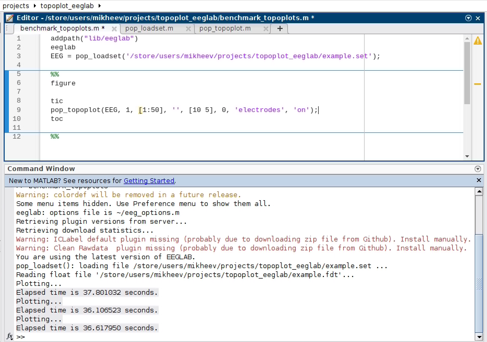
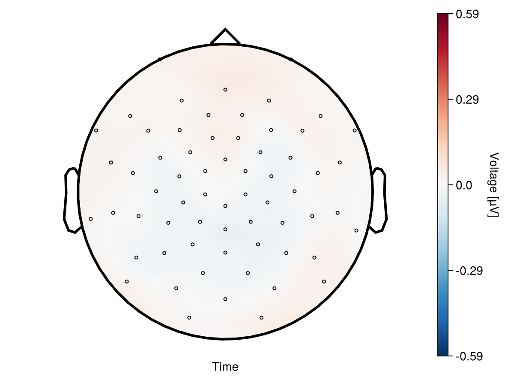
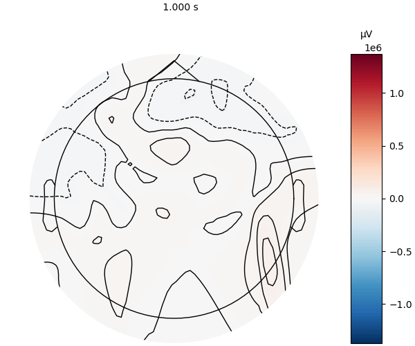

Speed measurement
Here we will compare the speed of plotting UnfoldMakie with MNE (Python) and EEGLAB (MATLAB).
Three cases are measured:
- Single topoplot
- Topoplot series with 50 topoplots
- Topoplott animation with 50 timestamps
Note that the results of benchmarking on your computer and on Github may differ.
using UnfoldMakie
using TopoPlots
using BenchmarkTools
using Observables
using CairoMakie
using Statistics
using PythonPlot;
using PyMNE; CondaPkg Found dependencies: /home/runner/work/UnfoldMakie.jl/UnfoldMakie.jl/docs/CondaPkg.toml
CondaPkg Found dependencies: /home/runner/.julia/packages/CondaPkg/Pc7ZA/CondaPkg.toml
CondaPkg Found dependencies: /home/runner/.julia/packages/PythonCall/trYos/CondaPkg.toml
CondaPkg Found dependencies: /home/runner/.julia/packages/PythonPlot/96RVm/CondaPkg.toml
CondaPkg Found dependencies: /home/runner/.julia/packages/PyMNE/AlJE6/CondaPkg.toml
CondaPkg Resolving changes
- libstdcxx
- libstdcxx-ng
CondaPkg Removing packages
│ /home/runner/.julia/artifacts/43005ee838d3b9ab9b3f1d790fa2e43bd62e6912/bin/micromamba
│ -r /home/runner/.julia/scratchspaces/0b3b1443-0f03-428d-bdfb-f27f9c1191ea/root
│ remove
│ -y
│ -p /home/runner/work/UnfoldMakie.jl/UnfoldMakie.jl/docs/.CondaPkg/env
│ libstdcxx
└ libstdcxx-ng
Transaction
Prefix: /home/runner/work/UnfoldMakie.jl/UnfoldMakie.jl/docs/.CondaPkg/env
Removing specs:
- libstdcxx
- libstdcxx-ng
Package Version Build Channel Size
────────────────────────────────────────────────────────────────────────────────────────────────────────────
Remove:
────────────────────────────────────────────────────────────────────────────────────────────────────────────
- _python_abi3_support 1.0 hd8ed1ab_3 conda-forge Cached
- aiohappyeyeballs 2.7.1 pyhd8ed1ab_0 conda-forge Cached
- aiohttp 3.14.5 py312h8b7ec3f_1 conda-forge Cached
- aiosignal 1.4.0 pyhd8ed1ab_0 conda-forge Cached
- alsa-lib 1.2.16.1 h7cc23a3_1 conda-forge Cached
- annotated-doc 0.0.6 pyh5ded981_0 conda-forge Cached
- annotated-types 0.8.0 pyhd8ed1ab_0 conda-forge Cached
- antio 0.7.1 py311h46c35a3_1 conda-forge Cached
- anyio 4.16.0 pyh5ded981_1 conda-forge Cached
- aom 3.15.3 pl5321h57e6904_0 conda-forge Cached
- argon2-cffi 25.1.0 pyhd8ed1ab_0 conda-forge Cached
- argon2-cffi-bindings 26.1.0 py312h5cc1888_2 conda-forge Cached
- arrow 1.4.0 pyhcf101f3_0 conda-forge Cached
- asttokens 3.0.2 pyhd8ed1ab_0 conda-forge Cached
- async-lru 2.4.0 pyh5ded981_0 conda-forge Cached
- attrs 26.1.0 pyhcf101f3_0 conda-forge Cached
- babel 2.18.0 pyhcf101f3_1 conda-forge Cached
- beautifulsoup4 4.15.0 pyha770c72_0 conda-forge Cached
- bleach 6.4.0 pyhcf101f3_0 conda-forge Cached
- bleach-with-css 6.4.0 hac0b51c_0 conda-forge Cached
- blosc 1.21.7 ha7ee91d_2 conda-forge Cached
- brotli 1.2.1 h505cf86_1 conda-forge Cached
- brotli-bin 1.2.1 h9908984_1 conda-forge Cached
- bzip2 1.0.8 hda65f42_10 conda-forge Cached
- c-ares 1.34.9 hebe6cf0_0 conda-forge Cached
- cachebox 5.2.3 py312h868fb18_1 conda-forge Cached
- cached-property 2.0.1 pyhcf101f3_0 conda-forge Cached
- cached_property 2.0.1 pyhcf101f3_0 conda-forge Cached
- cairo 1.18.6 h3c89d7e_0 conda-forge Cached
- certifi 2026.10.23 pyhd8ed1ab_3 conda-forge Cached
- cffi 2.1.1 py312h703531f_4 conda-forge Cached
- cgns 4.5.2 he6b204c_0 conda-forge Cached
- charset-normalizer 3.5.2 h1114479_0 conda-forge Cached
- cli11 2.7.2 h54a6638_1 conda-forge Cached
- click 8.5.1 pyh5ded981_0 conda-forge Cached
- cloudpickle 3.1.2 pyhcf101f3_1 conda-forge Cached
- colorama 0.4.6 pyhd8ed1ab_1 conda-forge Cached
- comm 0.2.3 pyhe01879c_0 conda-forge Cached
- contourpy 1.4.0 py312h9be0db6_2 conda-forge Cached
- cpython 3.12.16 py312hd8ed1ab_0 conda-forge Cached
- cycler 0.12.1 pyhcf101f3_2 conda-forge Cached
- cyclopts 5.5.2 pyh5ded981_0 conda-forge Cached
- cyrus-sasl 2.1.28 hac629b4_1 conda-forge Cached
- darkdetect 0.8.0 pyhd8ed1ab_1 conda-forge Cached
- dbus 1.16.2 he8c428d_2 conda-forge Cached
- debugpy 1.8.22 py312h80505a6_1 conda-forge Cached
- decorator 5.3.1 pyhd8ed1ab_0 conda-forge Cached
- deepdiff 9.1.0 pyhcf101f3_0 conda-forge Cached
- defusedxml 0.7.1 pyhd8ed1ab_0 conda-forge Cached
- deprecated 3.0.1 pyhc364b38_0 conda-forge Cached
- dipy 1.12.1 np2py312h748b537_2 conda-forge Cached
- docstring_parser 0.18.0 pyhd8ed1ab_0 conda-forge Cached
- double-conversion 3.4.0 hecca717_0 conda-forge Cached
- edfio 0.4.18 pyhd8ed1ab_0 conda-forge Cached
- eeglabio 0.1.3 pyhd8ed1ab_0 conda-forge Cached
- eigen 5.0.1 h19c2612_3 conda-forge Cached
- eigen-abi 5.0.1.80 hf414acd_3 conda-forge Cached
- executing 2.3.0 pyhd8ed1ab_0 conda-forge Cached
- expat 2.9.0 hd2095e1_0 conda-forge Cached
- exprtk 0.0.3 ha770c72_1 conda-forge Cached
- fast_float 8.1.0 hb700be7_0 conda-forge Cached
- ffmpeg 9.0.2 gpl_hac98dcb_908 conda-forge Cached
- fmt 12.1.0 h76c4fd7_1 conda-forge Cached
- font-ttf-dejavu-sans-mono 2.37 hab24e00_0 conda-forge Cached
- font-ttf-inconsolata 3.000 h77eed37_0 conda-forge Cached
- font-ttf-source-code-pro 2.038 h77eed37_0 conda-forge Cached
- font-ttf-ubuntu 0.83 h77eed37_4 conda-forge Cached
- fontconfig 2.18.3 h4db4eae_2 conda-forge Cached
- fonts-conda-ecosystem 1 0 conda-forge Cached
- fonts-conda-forge 1 hc364b38_1 conda-forge Cached
- fonttools 4.68.0 py312hfd18d64_0 conda-forge Cached
- formulaic 1.2.2 pyhd8ed1ab_0 conda-forge Cached
- fqdn 1.6.0 pyh5ded981_0 conda-forge Cached
- freetype 2.14.3 ha770c72_2 conda-forge Cached
- fribidi 1.0.18 h7cc23a3_0 conda-forge Cached
- frozenlist 1.8.0 py312hd8b35f9_1 conda-forge Cached
- gdk-pixbuf 2.44.8 h68053f1_2 conda-forge Cached
- gl2ps 1.4.3 h8658303_0 conda-forge Cached
- glew 2.2.0 h3abd4de_0 conda-forge Cached
- glib 2.90.1 h5da5b1f_3 conda-forge Cached
- glib-tools 2.90.1 h876c321_3 conda-forge Cached
- glslang 16.6.0 h980caa0_0 conda-forge Cached
- gmp 6.3.0 hfd2156b_3 conda-forge Cached
- graphite2 1.3.15 h54a6638_1 conda-forge Cached
- gst-plugins-base 1.26.11 h6d08254_0 conda-forge Cached
- gstreamer 1.26.11 h29cf534_0 conda-forge Cached
- h11 0.16.0 pyhcf101f3_1 conda-forge Cached
- h2 4.4.1 pyhcf101f3_0 conda-forge Cached
- h5io 0.2.6 pyhd0a5735_1 conda-forge Cached
- h5py 3.16.0 nompi_py312hfaa9938_105 conda-forge Cached
- harfbuzz 15.0.0 ha770c72_0 conda-forge Cached
- hdf4 4.2.15 h2a13503_7 conda-forge Cached
- hdf5 1.14.6 nompi_h19486de_110 conda-forge Cached
- hpack 4.2.0 pyhd8ed1ab_0 conda-forge Cached
- httpcore 1.0.9 pyh29332c3_0 conda-forge Cached
- httpx 0.28.1 pyhd8ed1ab_0 conda-forge Cached
- hyperframe 6.1.0 pyhd8ed1ab_0 conda-forge Cached
- icu 78.3 py310h44b86e0_2 conda-forge Cached
- idna 3.20 pyh5ded981_0 conda-forge Cached
- imageio 2.38.2 pyh5ded981_0 conda-forge Cached
- imageio-ffmpeg 0.8.1 pyhd8ed1ab_1 conda-forge Cached
- importlib-metadata 10.0.0 pyh5ded981_0 conda-forge Cached
- importlib_resources 7.1.0 pyhd8ed1ab_0 conda-forge Cached
- intel-gmmlib 22.10.2 h7148c6a_0 conda-forge Cached
- intel-media-driver 26.1.6 hecca717_0 conda-forge Cached
- interface_meta 1.3.0 pyhd8ed1ab_1 conda-forge Cached
- ipykernel 7.4.0 pyh4a3486f_0 conda-forge Cached
- ipython 9.18.1 pyh53cf698_0 conda-forge Cached
- ipython_pygments_lexers 1.1.1 pyhd8ed1ab_0 conda-forge Cached
- ipywidgets 8.1.9 pyhd8ed1ab_0 conda-forge Cached
- isoduration 20.11.0 pyhd8ed1ab_1 conda-forge Cached
- jedi 0.20.1 pyh5ded981_0 conda-forge Cached
- jinja2 3.1.6 pyhcf101f3_1 conda-forge Cached
- joblib 1.6.0 pyhcf101f3_0 conda-forge Cached
- json5 0.17.3 pyhd8ed1ab_0 conda-forge Cached
- jsoncpp 1.9.8 h4dbf13b_2 conda-forge Cached
- jsonpointer 3.12 pyh5ded981_0 conda-forge Cached
- jsonschema 4.26.0 pyhcf101f3_1 conda-forge Cached
- jsonschema-specifications 2025.9.1 pyhcf101f3_0 conda-forge Cached
- jsonschema-with-format-nongpl 4.26.0 hcf101f3_1 conda-forge Cached
- jupyter 1.1.1 pyhd8ed1ab_1 conda-forge Cached
- jupyter-builder 1.3.0 pyh5ded981_0 conda-forge Cached
- jupyter-lsp 2.3.1 pyhcf101f3_0 conda-forge Cached
- jupyter_client 8.10.0 pyhcf101f3_0 conda-forge Cached
- jupyter_console 6.6.3 pyhd8ed1ab_1 conda-forge Cached
- jupyter_core 5.9.1 pyhc90fa1f_0 conda-forge Cached
- jupyter_events 0.12.1 pyhcf101f3_0 conda-forge Cached
- jupyter_server 2.21.1 pyh5ded981_0 conda-forge Cached
- jupyter_server_terminals 0.5.4 pyhcf101f3_0 conda-forge Cached
- jupyterlab 4.6.6 pyhd8ed1ab_0 conda-forge Cached
- jupyterlab_pygments 0.3.0 pyhd8ed1ab_2 conda-forge Cached
- jupyterlab_server 2.28.1 pyh5ded981_0 conda-forge Cached
- jupyterlab_widgets 3.0.17 pyhcf101f3_0 conda-forge Cached
- keyutils 1.6.3 h7cc23a3_1 conda-forge Cached
- kiwisolver 1.5.1 py312h9be0db6_4 conda-forge Cached
- krb5 1.22.2 hbc21106_2 conda-forge Cached
- lame 4.0 h770b6ad_1 conda-forge Cached
- lark 1.3.1 pyhd8ed1ab_0 conda-forge Cached
- lazy-loader 0.6 pyhd8ed1ab_0 conda-forge Cached
- lazy_loader 0.6 pyhd8ed1ab_0 conda-forge Cached
- lcms2 2.20 h9073bf1_0 conda-forge Cached
- ld_impl_linux-64 2.46.1 default_hbd61a6d_103 conda-forge Cached
- lerc 4.3.0 he78707d_0 conda-forge Cached
- level-zero 1.34.0 h7148c6a_0 conda-forge Cached
- libabseil 20260817.0 cxx17_hbb87c76_2 conda-forge Cached
- libaec 1.1.8 h659bb9a_0 conda-forge Cached
- libass 0.17.5 h3b6f6bf_1 conda-forge Cached
- libblas 3.11.0 12_h4a7cf45_openblas conda-forge Cached
- libboost 1.90.0 h1101c1b_3 conda-forge Cached
- libboost-devel 1.90.0 hdab9b82_3 conda-forge Cached
- libboost-headers 1.90.0 h707e725_3 conda-forge Cached
- libbrotlicommon 1.2.1 h39a168f_1 conda-forge Cached
- libbrotlidec 1.2.1 ha411449_1 conda-forge Cached
- libbrotlienc 1.2.1 h018ffa1_1 conda-forge Cached
- libcap 2.78 h084b8d7_1 conda-forge Cached
- libcblas 3.11.0 12_h0358290_openblas conda-forge Cached
- libclang-cpp22.1 22.1.8 default_h0acdd01_11 conda-forge Cached
- libclang-cpp23.1 23.1.5 default_h0acdd01_0 conda-forge Cached
- libclang13 23.1.5 default_h782a7a8_0 conda-forge Cached
- libcups 2.3.3 h7a8fb5f_6 conda-forge Cached
- libcurl 8.23.0 ha042cf0_0 conda-forge Cached
- libdav1d7 1.5.4 hebe6cf0_4 conda-forge Cached
- libdeflate 1.26 h351257e_0 conda-forge Cached
- libdovi 3.4.0 h39d0f39_1 conda-forge Cached
- libdrm 2.4.129 h7cc23a3_0 conda-forge Cached
- libedit 3.1.20260512 pl5321h373387f_0 conda-forge Cached
- libegl 1.7.0 ha4b6fd6_5 conda-forge Cached
- libegl-devel 1.7.0 ha4b6fd6_5 conda-forge Cached
- libev 4.33 h280c20c_3 conda-forge Cached
- libevent 2.1.12 h5348a74_2 conda-forge Cached
- libexpat 2.9.0 hd2095e1_0 conda-forge Cached
- libffi 3.7.0 h81df57d_1 conda-forge Cached
- libflac 1.5.0 he200343_1 conda-forge Cached
- libfreetype 2.14.3 ha770c72_2 conda-forge Cached
- libfreetype6 2.14.3 h5e6c136_2 conda-forge Cached
- libgcc-ng 15.1.0 h69a702a_5 conda-forge Cached
- libgfortran 15.1.0 h69a702a_5 conda-forge Cached
- libgfortran5 15.1.0 hcea5267_5 conda-forge Cached
- libgl 1.7.0 ha4b6fd6_5 conda-forge Cached
- libgl-devel 1.7.0 ha4b6fd6_5 conda-forge Cached
- libglib 2.90.1 hb382ddc_3 conda-forge Cached
- libglu 9.0.3 h5888daf_1 conda-forge Cached
- libglvnd 1.7.0 ha4b6fd6_5 conda-forge Cached
- libglx 1.7.0 ha4b6fd6_5 conda-forge Cached
- libglx-devel 1.7.0 ha4b6fd6_5 conda-forge Cached
- libharfbuzz 15.0.0 h23af247_0 conda-forge Cached
- libharfbuzz-devel 15.0.0 h23af247_0 conda-forge Cached
- libharu 2.4.6 h36e74d4_0 conda-forge Cached
- libhwloc 2.15.0 default_hd7c4d0c_1001 conda-forge Cached
- libhwy 1.4.0 h57c4cff_2 conda-forge Cached
- libiconv 1.18 h0cb94f2_3 conda-forge Cached
- libjpeg-turbo 3.2.1 h7cc23a3_0 conda-forge Cached
- libjxl 0.13.0 heb2dce7_0 conda-forge Cached
- liblapack 3.11.0 12_h47877c9_openblas conda-forge Cached
- liblapacke 3.11.0 12_h6ae95b6_openblas conda-forge Cached
- libllvm22 22.1.8 h474f4eb_3 conda-forge Cached
- libllvm23 23.1.5 h474f4eb_0 conda-forge Cached
- liblzma 5.8.3 hb03c661_1 conda-forge Cached
- liblzma-devel 5.8.3 hb03c661_1 conda-forge Cached
- libmatio 1.5.30 he0a2e19_0 conda-forge Cached
- libnetcdf 4.10.1 nompi_hf21f329_203 conda-forge Cached
- libnghttp2 1.71.0 hc5e5977_0 conda-forge Cached
- libnsl 2.0.1 hb9d3cd8_1 conda-forge Cached
- libntlm 1.8 hebe6cf0_2 conda-forge Cached
- libogg 1.3.5 hd0c01bc_1 conda-forge Cached
- libopenblas 0.3.34 pthreads_h94d23a6_0 conda-forge Cached
- libopengl 1.7.0 ha4b6fd6_5 conda-forge Cached
- libopengl-devel 1.7.0 ha4b6fd6_5 conda-forge Cached
- libopenvino 2026.4.1 hab39aeb_2 conda-forge Cached
- libopenvino-auto-batch-plugin 2026.4.1 h7c4c8b8_2 conda-forge Cached
- libopenvino-auto-plugin 2026.4.1 h7c4c8b8_2 conda-forge Cached
- libopenvino-gguf-frontend 2026.4.1 h7c4c8b8_2 conda-forge Cached
- libopenvino-hetero-plugin 2026.4.1 he798987_2 conda-forge Cached
- libopenvino-intel-cpu-plugin 2026.4.1 hab39aeb_2 conda-forge Cached
- libopenvino-intel-gpu-plugin 2026.4.1 hab39aeb_2 conda-forge Cached
- libopenvino-intel-npu-plugin 2026.4.1 hab39aeb_2 conda-forge Cached
- libopenvino-ir-frontend 2026.4.1 he798987_2 conda-forge Cached
- libopenvino-onnx-frontend 2026.4.1 hff0d05b_2 conda-forge Cached
- libopenvino-paddle-frontend 2026.4.1 hff0d05b_2 conda-forge Cached
- libopenvino-pytorch-frontend 2026.4.1 h90c3318_2 conda-forge Cached
- libopenvino-tensorflow-frontend 2026.4.1 hf340240_2 conda-forge Cached
- libopenvino-tensorflow-lite-frontend 2026.4.1 h90c3318_2 conda-forge Cached
- libopus 1.6.1 hebe6cf0_1 conda-forge Cached
- libpango 1.58.2 hce4e988_3 conda-forge Cached
- libpango-devel 1.58.2 h317d9d0_3 conda-forge Cached
- libpciaccess 0.19 hb03c661_1 conda-forge Cached
- libplacebo 7.387.0 h9669efe_0 conda-forge Cached
- libpng 1.6.59 h922cc85_0 conda-forge Cached
- libpq 18.7 h3883810_0 conda-forge Cached
- libprotobuf 7.35.1 h8a00109_4 conda-forge Cached
- libpsl 0.23.1 hd9e3e90_1 conda-forge Cached
- librsvg 2.62.4 ha427ee3_0 conda-forge Cached
- libsndfile 1.2.2 hbc6d301_3 conda-forge Cached
- libsodium 1.0.22 hebe6cf0_3 conda-forge Cached
- libsqlite 3.54.1 h13e7031_0 conda-forge Cached
- libssh2 1.11.1 h6154650_1 conda-forge Cached
- libstdcxx 15.1.0 h8f9b012_5 conda-forge Cached
- libstdcxx-ng 15.1.0 h4852527_5 conda-forge Cached
- libsystemd0 262.2 h26e0ef7_1 conda-forge Cached
- libtheora 1.2.0 h85c0a6d_0 conda-forge Cached
- libtiff 4.7.2 h6d37cbf_2 conda-forge Cached
- libudev1 262.2 h26e0ef7_1 conda-forge Cached
- libunwind 1.8.3 hd2e8b67_1 conda-forge Cached
- liburing 2.15 h4dbf13b_0 conda-forge Cached
- libusb 1.0.30 h0d1bbbc_1 conda-forge Cached
- libuuid 2.42.4 hcfc3c73_1 conda-forge Cached
- libva 2.24.1 hb83e432_1 conda-forge Cached
- libvorbis 1.3.7 h54a6638_2 conda-forge Cached
- libvpl 2.16.0 h54a6638_0 conda-forge Cached
- libvpx 1.17.0 hd2095e1_0 conda-forge Cached
- libvulkan-loader 1.4.357.0 h0e34353_2 conda-forge Cached
- libwebp-base 1.6.0 hd42ef1d_1 conda-forge Cached
- libxcb 1.17.0 hb83e432_3 conda-forge Cached
- libxcrypt 4.4.38 h280c20c_0 conda-forge Cached
- libxkbcommon 1.13.2 h59c2f34_2 conda-forge Cached
- libxkbfile 1.2.0 hb03c661_0 conda-forge Cached
- libxml2 2.15.4 h7df9aa5_1 conda-forge Cached
- libxml2-16 2.15.4 hf3af7cc_1 conda-forge Cached
- libxslt 1.1.45 h8e12856_1 conda-forge Cached
- libzip 1.12.1 h6008cf6_0 conda-forge Cached
- libzlib 1.3.2 h25fd6f3_3 conda-forge Cached
- llvmlite 0.50.0 py312hb491018_1 conda-forge Cached
- lxml 6.1.3 py312h12aa15f_2 conda-forge Cached
- lz4-c 1.11.1 hee9eb32_0 conda-forge Cached
- markdown-it-py 4.3.0 pyhd8ed1ab_0 conda-forge Cached
- markupsafe 3.0.4 py312h8b7ec3f_5 conda-forge Cached
- matplotlib 3.8.4 py312h7900ff3_2 conda-forge Cached
- matplotlib-base 3.8.4 py312h20ab3a6_2 conda-forge Cached
- matplotlib-inline 0.2.2 pyhd8ed1ab_0 conda-forge Cached
- mdurl 0.1.2 pyhd8ed1ab_1 conda-forge Cached
- mffpy 0.11.0 pyhd8ed1ab_0 conda-forge Cached
- mistune 3.4.0 pyh5ded981_0 conda-forge Cached
- mne 1.12.1 linux_pyside6_h60f6096_200 conda-forge Cached
- mne-base 1.12.1 pyh694c41f_200 conda-forge Cached
- mne-qt-browser 0.7.5 pyh0555025_0 conda-forge Cached
- more-itertools 11.2.1 pyh5ded981_0 conda-forge Cached
- mpg123 1.33.7 h877a99e_1 conda-forge Cached
- msgpack-python 1.2.4 py312h9be0db6_1 conda-forge Cached
- multidict 7.2.1 py312hfd18d64_1 conda-forge Cached
- munkres 1.1.4 pyhd8ed1ab_1 conda-forge Cached
- narwhals 2.28.0 pyh5ded981_0 conda-forge Cached
- nbclient 0.11.0 pyhcf101f3_1 conda-forge Cached
- nbconvert-core 7.17.2 pyh5ded981_0 conda-forge Cached
- nbformat 5.11.1 pyhcf101f3_0 conda-forge Cached
- ncurses 6.6 hdb14827_1 conda-forge Cached
- nest-asyncio2 1.7.4 pyh5ded981_0 conda-forge Cached
- nibabel 5.5.0 pyh5ded981_0 conda-forge Cached
- nilearn 0.14.1 pyh5ded981_0 conda-forge Cached
- nlohmann_json 3.12.0 h54a6638_2 conda-forge Cached
- nomkl 1.0 h5ca1d4c_0 conda-forge Cached
- notebook 7.6.5 pyh5ded981_0 conda-forge Cached
- notebook-shim 0.2.4 pyhd8ed1ab_1 conda-forge Cached
- nspr 4.40 h76ac25a_0 conda-forge Cached
- nss 3.118 h445c969_0 conda-forge Cached
- numba 0.68.1 py312h80505a6_0 conda-forge Cached
- numexpr 2.14.2 py312h0000c9d_101 conda-forge Cached
- numpy 2.5.5 py312he827f4e_1 conda-forge Cached
- ocl-icd 2.3.4 hb03c661_1 conda-forge Cached
- opencl-headers 2025.06.13 hecca717_0 conda-forge Cached
- openh264 2.7.0 h8c49934_0 conda-forge Cached
- openjpeg 2.5.4 heb1ab33_2 conda-forge Cached
- openldap 2.6.13 hbde042b_0 conda-forge Cached
- openmeeg 2.6.0 np2py311h0b111d8_0 conda-forge Cached
- orderly-set 5.5.0 pyhe01879c_0 conda-forge Cached
- overrides 7.7.0 pyhd8ed1ab_1 conda-forge Cached
- packaging 26.3 pyhc364b38_0 conda-forge Cached
- pandas 2.3.3 py312hf79963d_1 conda-forge Cached
- pandocfilters 1.5.1 pyh5ded981_0 conda-forge Cached
- pango 1.58.2 h2f58602_3 conda-forge Cached
- parso 0.8.7 pyhcf101f3_0 conda-forge Cached
- patsy 1.0.3 pyhcf101f3_0 conda-forge Cached
- pcre2 10.49 h8b3dc9c_0 conda-forge Cached
- pexpect 4.9.0 pyhd8ed1ab_1 conda-forge Cached
- pillow 13.0.0 py312h38079b3_1 conda-forge Cached
- pip 26.2.2 pyh8b19718_2 conda-forge Cached
- pixman 0.46.4 h54a6638_3 conda-forge Cached
- platformdirs 4.14.5 pyh5ded981_0 conda-forge Cached
- ply 3.11 pyhd8ed1ab_3 conda-forge Cached
- pooch 1.9.0 pyhd8ed1ab_0 conda-forge Cached
- proj 9.9.0 h3767062_1 conda-forge Cached
- prometheus_client 0.26.0 pyhd8ed1ab_0 conda-forge Cached
- prompt-toolkit 3.0.53 pyha770c72_0 conda-forge Cached
- prompt_toolkit 3.0.53 hd8ed1ab_0 conda-forge Cached
- propcache 0.5.4 py312hfd18d64_3 conda-forge Cached
- psutil 7.2.2 py312h1b36aeb_4 conda-forge Cached
- pthread-stubs 0.4 h7cc23a3_1004 conda-forge Cached
- ptyprocess 0.7.0 pyhd8ed1ab_1 conda-forge Cached
- pugixml 1.15 h3f63f65_0 conda-forge Cached
- pulseaudio-client 17.0 hb10c1b2_4 conda-forge Cached
- pure_eval 0.2.4 pyhd8ed1ab_0 conda-forge Cached
- pybv 0.8.1 pyhd8ed1ab_0 conda-forge Cached
- pycparser 3.12 pyh5ded981_1 conda-forge Cached
- pydantic 2.14.3 pyh5ded981_0 conda-forge Cached
- pydantic-core 2.50.4 py312hc767a74_1 conda-forge Cached
- pygments 2.21.0 pyhcf101f3_0 conda-forge Cached
- pymatreader 1.3.2 pyhd8ed1ab_0 conda-forge Cached
- pyparsing 3.3.3 pyh5ded981_0 conda-forge Cached
- pyqt 5.15.11 py312h82c0db2_2 conda-forge Cached
- pyqt5-sip 12.17.0 py312h1289d80_2 conda-forge Cached
- pyqtgraph 0.14.0 pyhd8ed1ab_0 conda-forge Cached
- pyside6 6.11.3 py312hf520645_1 conda-forge Cached
- python 3.12.14 h8ab3286_1_cpython conda-forge Cached
- python-abi3 3.12 he1d15d4_3 conda-forge Cached
- python-dateutil 4.0.0 pyh5ded981_0 conda-forge Cached
- python-fastjsonschema 2.22.3 pyh5ded981_0 conda-forge Cached
- python-gil 3.12.16 hd8ed1ab_0 conda-forge Cached
- python-json-logger 4.2.0 pyhd8ed1ab_0 conda-forge Cached
- python-picard 0.8.1 pyh9493f07_0 conda-forge Cached
- python-tzdata 2026.6 pyh5ded981_0 conda-forge Cached
- python_abi 3.12 9_cp312 conda-forge Cached
- pytz 2026.6 pyh5ded981_0 conda-forge Cached
- pyvista 0.49.2 pyha804496_0 conda-forge Cached
- pyvista-validation 0.2.2 pyh5ded981_0 conda-forge Cached
- pyvistaqt 0.13.2 pyhd8ed1ab_0 conda-forge Cached
- pyyaml 6.0.3 py312h7575043_3 conda-forge Cached
- pyzmq 27.3.0 py312h8a5ba0d_0 conda-forge Cached
- qdarkstyle 3.2.3 pyhd8ed1ab_1 conda-forge Cached
- qt-main 5.15.15 h0c412b5_8 conda-forge Cached
- qt6-main 6.11.3 pl5321hb5a8836_1 conda-forge Cached
- qtpy 2.4.3 pyhd8ed1ab_1 conda-forge Cached
- readline 8.3 hd6e31c0_1 conda-forge Cached
- referencing 0.37.0 pyhcf101f3_0 conda-forge Cached
- requests 2.34.2 pyhcf101f3_0 conda-forge Cached
- rfc3339-validator 0.1.4 pyhd8ed1ab_1 conda-forge Cached
- rfc3986-validator 0.1.1 pyh9f0ad1d_0 conda-forge Cached
- rfc3987-syntax 1.1.0 pyhe01879c_1 conda-forge Cached
- rich 15.0.0 pyhcf101f3_0 conda-forge Cached
- rich-rst 2.2.0 pyhd8ed1ab_0 conda-forge Cached
- rpds-py 2026.9.1 py312hc767a74_0 conda-forge Cached
- scikit-learn 1.9.1 np2py312h91ec553_1 conda-forge Cached
- scipy 1.18.0 py312h54fa4ab_0 conda-forge Cached
- scooby 0.12.1 pyhd8ed1ab_0 conda-forge Cached
- sdl2 2.32.56 hee9eb32_1 conda-forge Cached
- sdl3 3.4.20 h8e1bbd5_2 conda-forge Cached
- seaborn 0.13.2 hd8ed1ab_3 conda-forge Cached
- seaborn-base 0.13.2 pyhd8ed1ab_3 conda-forge Cached
- send2trash 2.2.0 pyh4a3486f_0 conda-forge Cached
- setuptools 84.2.1 pyhe730653_0 conda-forge Cached
- shaderc 2026.4 hcebf71c_1 conda-forge Cached
- shellingham 1.5.4 pyhd8ed1ab_2 conda-forge Cached
- sip 6.10.0 py312h1289d80_1 conda-forge Cached
- six 1.17.0 pyhe01879c_1 conda-forge Cached
- snappy 1.3.1 h7edda9a_1 conda-forge Cached
- sniffio 1.3.1 pyhd8ed1ab_2 conda-forge Cached
- soupsieve 4.1.1 pyhd8ed1ab_0 conda-forge Cached
- spirv-tools 2026.4 h7148c6a_2 conda-forge Cached
- sqlite 3.54.1 h9ffa6c4_0 conda-forge Cached
- stack_data 0.6.3 pyhd8ed1ab_1 conda-forge Cached
- statsmodels 0.15.0 np2py312h32d774f_2 conda-forge Cached
- svt-av1 4.3.0 hd2095e1_0 conda-forge Cached
- tbb 2023.1.0 haa8c3ee_4 conda-forge Cached
- tbb-devel 2023.1.0 h517a1f1_4 conda-forge Cached
- terminado 0.18.1 pyhc90fa1f_1 conda-forge Cached
- threadpoolctl 3.8.0 pyhc455866_0 conda-forge Cached
- tinycss2 1.4.0 pyhd8ed1ab_0 conda-forge Cached
- tk 8.6.13 noxft_h1df4ec4_4 conda-forge Cached
- toml 0.10.2 pyhcf101f3_3 conda-forge Cached
- tomli 2.5.0 pyh5ded981_0 conda-forge Cached
- tornado 6.6.1 py312h1b36aeb_0 conda-forge Cached
- tqdm 4.70.1 pyhfa0c392_0 conda-forge Cached
- traitlets 5.16.1 pyhcf101f3_0 conda-forge Cached
- trame 4.0.0 pyhd8ed1ab_0 conda-forge Cached
- trame-client 4.1.4 pyhd8ed1ab_0 conda-forge Cached
- trame-common 1.3.0 pyhd8ed1ab_0 conda-forge Cached
- trame-server 4.1.2 pyhd8ed1ab_0 conda-forge Cached
- trame-vtk 2.11.17 pyh22d6f38_0 conda-forge Cached
- trame-vuetify 3.3.0 pyhd8ed1ab_0 conda-forge Cached
- trx-python 0.5.0 pyhe730653_0 conda-forge Cached
- typer 0.29.1 pyh5ded981_0 conda-forge Cached
- typing-extensions 4.16.0 h69aa097_0 conda-forge Cached
- typing-inspection 0.4.5 pyh5ded981_0 conda-forge Cached
- typing_extensions 4.16.0 pyhcf101f3_0 conda-forge Cached
- typing_utils 0.1.0 pyhd8ed1ab_1 conda-forge Cached
- tzdata 2026e h5d301ff_0 conda-forge Cached
- unicodedata2 18.0.0 py312h5cc1888_1 conda-forge Cached
- uri-template 1.3.0 pyhd8ed1ab_1 conda-forge Cached
- urllib3 2.8.0 pyh5ded981_1 conda-forge Cached
- utfcpp 5.0.0 ha770c72_0 conda-forge Cached
- viskores 1.1.0 hca82ae8_0 conda-forge Cached
- vtk 9.7.2 py312hb50c85d_1 conda-forge Cached
- vtk-base 9.7.2 py312h44decbd_1 conda-forge Cached
- vtk-io-ffmpeg 9.7.2 py312hdc383bd_1 conda-forge Cached
- wayland 1.26.0 hc1c935e_2 conda-forge Cached
- wayland-protocols 1.50 hd8ed1ab_0 conda-forge Cached
- wcwidth 0.9.4 py311hd139983_0 conda-forge Cached
- webcolors 25.10.0 pyhd8ed1ab_0 conda-forge Cached
- webencodings 0.6.1 pyh5ded981_0 conda-forge Cached
- websocket-client 1.9.2 pyh5ded981_1 conda-forge Cached
- wheel 0.48.0 pyhd8ed1ab_0 conda-forge Cached
- widgetsnbextension 4.0.16 pyhd8ed1ab_0 conda-forge Cached
- wrapt 2.5.2 py312h1b36aeb_0 conda-forge Cached
- wslink 2.6.0 pyhd8ed1ab_0 conda-forge Cached
- x264 1!164.3095 pl5321h63c0a64_3 conda-forge Cached
- x265 3.5 h73f68a7_4 conda-forge Cached
- xcb-util 0.4.1 h4f16b4b_2 conda-forge Cached
- xcb-util-cursor 0.1.6 hb03c661_0 conda-forge Cached
- xcb-util-image 0.4.0 hb711507_2 conda-forge Cached
- xcb-util-keysyms 0.4.1 hb711507_0 conda-forge Cached
- xcb-util-renderutil 0.3.10 hb711507_0 conda-forge Cached
- xcb-util-wm 0.4.2 hb711507_0 conda-forge Cached
- xkeyboard-config 2.48 hebe6cf0_1 conda-forge Cached
- xlrd 2.0.2 pyhd8ed1ab_0 conda-forge Cached
- xmltodict 1.0.4 pyhcf101f3_0 conda-forge Cached
- xorg-libice 1.1.2 h280c20c_0 conda-forge Cached
- xorg-libsm 1.2.6 h0d788c3_1 conda-forge Cached
- xorg-libx11 1.8.14 hb83e432_0 conda-forge Cached
- xorg-libxau 1.0.12 h7cc23a3_2 conda-forge Cached
- xorg-libxcomposite 0.4.7 hb03c661_0 conda-forge Cached
- xorg-libxcursor 1.2.3 h7cc23a3_1 conda-forge Cached
- xorg-libxdamage 1.1.6 hb9d3cd8_0 conda-forge Cached
- xorg-libxdmcp 1.1.5 h7cc23a3_2 conda-forge Cached
- xorg-libxext 1.3.7 h7cc23a3_1 conda-forge Cached
- xorg-libxfixes 6.0.2 h7cc23a3_1 conda-forge Cached
- xorg-libxi 1.8.4 h7cc23a3_0 conda-forge Cached
- xorg-libxrandr 1.5.5 h7cc23a3_1 conda-forge Cached
- xorg-libxrender 0.9.13 h7cc23a3_0 conda-forge Cached
- xorg-libxscrnsaver 1.2.4 hb9d3cd8_0 conda-forge Cached
- xorg-libxshmfence 1.3.3 h7cc23a3_0 conda-forge Cached
- xorg-libxtst 1.2.6 h7cc23a3_0 conda-forge Cached
- xorg-libxxf86vm 1.1.7 h7cc23a3_1 conda-forge Cached
- xorg-xorgproto 2025.1 hebe6cf0_3 conda-forge Cached
- yaml 0.2.5 hebe6cf0_3 conda-forge Cached
- yarl 1.25.1 py312hfd18d64_1 conda-forge Cached
- zeromq 4.3.5 h901266b_12 conda-forge Cached
- zfp 1.0.1 h79e284d_6 conda-forge Cached
- zipp 4.1.2 pyh5ded981_0 conda-forge Cached
- zlib 1.3.2 h25fd6f3_3 conda-forge Cached
- zlib-ng 2.3.3 hce19668_1 conda-forge Cached
- zstd 1.5.7 hb78ec9c_7 conda-forge Cached
Summary:
Remove: 469 packages
Total download: 0 B
────────────────────────────────────────────────────────────────────────────────────────────────────────────
Transaction starting
Unlinking matplotlib-3.8.4-py312h7900ff3_2
Unlinking mne-1.12.1-linux_pyside6_h60f6096_200
Unlinking pyqt-5.15.11-py312h82c0db2_2
Unlinking xlrd-2.0.2-pyhd8ed1ab_0
Unlinking vtk-9.7.2-py312hb50c85d_1
Unlinking trame-vuetify-3.3.0-pyhd8ed1ab_0
Unlinking trame-vtk-2.11.17-pyh22d6f38_0
Unlinking trame-4.0.0-pyhd8ed1ab_0
Unlinking seaborn-0.13.2-hd8ed1ab_3
Unlinking pyvistaqt-0.13.2-pyhd8ed1ab_0
Unlinking python-picard-0.8.1-pyh9493f07_0
Unlinking pyside6-6.11.3-py312hf520645_1
Unlinking pymatreader-1.3.2-pyhd8ed1ab_0
Unlinking pybv-0.8.1-pyhd8ed1ab_0
Unlinking openmeeg-2.6.0-np2py311h0b111d8_0
Unlinking numba-0.68.1-py312h80505a6_0
Unlinking nilearn-0.14.1-pyh5ded981_0
Unlinking mne-qt-browser-0.7.5-pyh0555025_0
Unlinking mffpy-0.11.0-pyhd8ed1ab_0
Unlinking jupyter-1.1.1-pyhd8ed1ab_1
Unlinking imageio-ffmpeg-0.8.1-pyhd8ed1ab_1
Unlinking imageio-2.38.2-pyh5ded981_0
Unlinking h5io-0.2.6-pyhd0a5735_1
Unlinking eeglabio-0.1.3-pyhd8ed1ab_0
Unlinking edfio-0.4.18-pyhd8ed1ab_0
Unlinking dipy-1.12.1-np2py312h748b537_2
Unlinking antio-0.7.1-py311h46c35a3_1
Unlinking qt-main-5.15.15-h0c412b5_8
Unlinking pyqt5-sip-12.17.0-py312h1289d80_2
Unlinking vtk-io-ffmpeg-9.7.2-py312hdc383bd_1
Unlinking tbb-devel-2023.1.0-h517a1f1_4
Unlinking libopengl-devel-1.7.0-ha4b6fd6_5
Unlinking liblzma-devel-5.8.3-hb03c661_1
Unlinking libboost-devel-1.90.0-hdab9b82_3
Unlinking expat-2.9.0-hd2095e1_0
Unlinking eigen-5.0.1-h19c2612_3
Unlinking trame-server-4.1.2-pyhd8ed1ab_0
Unlinking trame-client-4.1.4-pyhd8ed1ab_0
Unlinking statsmodels-0.15.0-np2py312h32d774f_2
Unlinking seaborn-base-0.13.2-pyhd8ed1ab_3
Unlinking pyvista-0.49.2-pyha804496_0
Unlinking numexpr-2.14.2-py312h0000c9d_101
Unlinking xmltodict-1.0.4-pyhcf101f3_0
Unlinking libmatio-1.5.30-he0a2e19_0
Unlinking liblapacke-3.11.0-12_h6ae95b6_openblas
Unlinking llvmlite-0.50.0-py312hb491018_1
Unlinking scikit-learn-1.9.1-np2py312h91ec553_1
Unlinking qdarkstyle-3.2.3-pyhd8ed1ab_1
Unlinking pyqtgraph-0.14.0-pyhd8ed1ab_0
Unlinking mne-base-1.12.1-pyh694c41f_200
Unlinking darkdetect-0.8.0-pyhd8ed1ab_1
Unlinking lxml-6.1.3-py312h12aa15f_2
Unlinking deprecated-3.0.1-pyhc364b38_0
Unlinking notebook-7.6.5-pyh5ded981_0
Unlinking jupyter_console-6.6.3-pyhd8ed1ab_1
Unlinking ipywidgets-8.1.9-pyhd8ed1ab_0
Unlinking trx-python-0.5.0-pyhe730653_0
Unlinking h5py-3.16.0-nompi_py312hfaa9938_105
Unlinking click-8.5.1-pyh5ded981_0
Unlinking nss-3.118-h445c969_0
Unlinking libevent-2.1.12-h5348a74_2
Unlinking libclang13-23.1.5-default_h782a7a8_0
Unlinking libclang-cpp22.1-22.1.8-default_h0acdd01_11
Unlinking harfbuzz-15.0.0-ha770c72_0
Unlinking gst-plugins-base-1.26.11-h6d08254_0
Unlinking toml-0.10.2-pyhcf101f3_3
Unlinking sip-6.10.0-py312h1289d80_1
Unlinking ffmpeg-9.0.2-gpl_hac98dcb_908
Unlinking libboost-headers-1.90.0-h707e725_3
Unlinking libboost-1.90.0-h1101c1b_3
Unlinking more-itertools-11.2.1-pyh5ded981_0
Unlinking trame-common-1.3.0-pyhd8ed1ab_0
Unlinking patsy-1.0.3-pyhcf101f3_0
Unlinking formulaic-1.2.2-pyhd8ed1ab_0
Unlinking vtk-base-9.7.2-py312h44decbd_1
Unlinking pyvista-validation-0.2.2-pyh5ded981_0
Unlinking scooby-0.12.1-pyhd8ed1ab_0
Unlinking cyclopts-5.5.2-pyh5ded981_0
Unlinking nomkl-1.0-h5ca1d4c_0
Unlinking zlib-1.3.2-h25fd6f3_3
Unlinking threadpoolctl-3.8.0-pyhc455866_0
Unlinking joblib-1.6.0-pyhcf101f3_0
Unlinking qtpy-2.4.3-pyhd8ed1ab_1
Unlinking pooch-1.9.0-pyhd8ed1ab_0
Unlinking lazy_loader-0.6-pyhd8ed1ab_0
Unlinking tqdm-4.70.1-pyhfa0c392_0
Unlinking decorator-5.3.1-pyhd8ed1ab_0
Unlinking libxslt-1.1.45-h8e12856_1
Unlinking jupyterlab-4.6.6-pyhd8ed1ab_0
Unlinking prompt_toolkit-3.0.53-hd8ed1ab_0
Unlinking widgetsnbextension-4.0.16-pyhd8ed1ab_0
Unlinking jupyterlab_widgets-3.0.17-pyhcf101f3_0
Unlinking typer-0.29.1-pyh5ded981_0
Unlinking nibabel-5.5.0-pyh5ded981_0
Unlinking deepdiff-9.1.0-pyhcf101f3_0
Unlinking cached-property-2.0.1-pyhcf101f3_0
Unlinking nspr-4.40-h76ac25a_0
Unlinking libclang-cpp23.1-23.1.5-default_h0acdd01_0
Unlinking libllvm22-22.1.8-h474f4eb_3
Unlinking xorg-libxshmfence-1.3.3-h7cc23a3_0
Unlinking gstreamer-1.26.11-h29cf534_0
Unlinking ply-3.11-pyhd8ed1ab_3
Unlinking x265-3.5-h73f68a7_4
Unlinking x264-1!164.3095-pl5321h63c0a64_3
Unlinking svt-av1-4.3.0-hd2095e1_0
Unlinking sdl2-2.32.56-hee9eb32_1
Unlinking openh264-2.7.0-h8c49934_0
Unlinking libvpx-1.17.0-hd2095e1_0
Unlinking libvpl-2.16.0-h54a6638_0
Unlinking librsvg-2.62.4-ha427ee3_0
Unlinking libplacebo-7.387.0-h9669efe_0
Unlinking libopenvino-tensorflow-lite-frontend-2026.4.1-h90c3318_2
Unlinking libopenvino-tensorflow-frontend-2026.4.1-hf340240_2
Unlinking libopenvino-pytorch-frontend-2026.4.1-h90c3318_2
Unlinking libopenvino-paddle-frontend-2026.4.1-hff0d05b_2
Unlinking libopenvino-onnx-frontend-2026.4.1-hff0d05b_2
Unlinking libopenvino-ir-frontend-2026.4.1-he798987_2
Unlinking libopenvino-intel-npu-plugin-2026.4.1-hab39aeb_2
Unlinking libopenvino-intel-gpu-plugin-2026.4.1-hab39aeb_2
Unlinking libopenvino-intel-cpu-plugin-2026.4.1-hab39aeb_2
Unlinking libopenvino-hetero-plugin-2026.4.1-he798987_2
Unlinking libopenvino-gguf-frontend-2026.4.1-h7c4c8b8_2
Unlinking libopenvino-auto-plugin-2026.4.1-h7c4c8b8_2
Unlinking libopenvino-auto-batch-plugin-2026.4.1-h7c4c8b8_2
Unlinking libjxl-0.13.0-heb2dce7_0
Unlinking libdav1d7-1.5.4-hebe6cf0_4
Unlinking libass-0.17.5-h3b6f6bf_1
Unlinking gmp-6.3.0-hfd2156b_3
Unlinking aom-3.15.3-pl5321h57e6904_0
Unlinking pandas-2.3.3-py312hf79963d_1
Unlinking narwhals-2.28.0-pyh5ded981_0
Unlinking interface_meta-1.3.0-pyhd8ed1ab_1
Unlinking scipy-1.18.0-py312h54fa4ab_0
Unlinking wrapt-2.5.2-py312h1b36aeb_0
Unlinking wslink-2.6.0-pyhd8ed1ab_0
Unlinking viskores-1.1.0-hca82ae8_0
Unlinking utfcpp-5.0.0-ha770c72_0
Unlinking proj-9.9.0-h3767062_1
Unlinking nlohmann_json-3.12.0-h54a6638_2
Unlinking qt6-main-6.11.3-pl5321hb5a8836_1
Unlinking matplotlib-base-3.8.4-py312h20ab3a6_2
Unlinking libxkbfile-1.2.0-hb03c661_0
Unlinking libtheora-1.2.0-h85c0a6d_0
Unlinking libnetcdf-4.10.1-nompi_hf21f329_203
Unlinking libharu-2.4.6-h36e74d4_0
Unlinking jsoncpp-1.9.8-h4dbf13b_2
Unlinking gl2ps-1.4.3-h8658303_0
Unlinking fmt-12.1.0-h76c4fd7_1
Unlinking fast_float-8.1.0-hb700be7_0
Unlinking exprtk-0.0.3-ha770c72_1
Unlinking eigen-abi-5.0.1.80-hf414acd_3
Unlinking cli11-2.7.2-h54a6638_1
Unlinking cgns-4.5.2-he6b204c_0
Unlinking rich-rst-2.2.0-pyhd8ed1ab_0
Unlinking docstring_parser-0.18.0-pyhd8ed1ab_0
Unlinking cloudpickle-3.1.2-pyhcf101f3_1
Unlinking lazy-loader-0.6-pyhd8ed1ab_0
Unlinking notebook-shim-0.2.4-pyhd8ed1ab_1
Unlinking jupyterlab_server-2.28.1-pyh5ded981_0
Unlinking jupyter-lsp-2.3.1-pyhcf101f3_0
Unlinking jupyter-builder-1.3.0-pyh5ded981_0
Unlinking ipykernel-7.4.0-pyh4a3486f_0
Unlinking httpx-0.28.1-pyhd8ed1ab_0
Unlinking async-lru-2.4.0-pyh5ded981_0
Unlinking shellingham-1.5.4-pyhd8ed1ab_2
Unlinking pydantic-2.14.3-pyh5ded981_0
Unlinking colorama-0.4.6-pyhd8ed1ab_1
Unlinking annotated-doc-0.0.6-pyh5ded981_0
Unlinking importlib_resources-7.1.0-pyhd8ed1ab_0
Unlinking orderly-set-5.5.0-pyhe01879c_0
Unlinking cachebox-5.2.3-py312h868fb18_1
Unlinking cached_property-2.0.1-pyhcf101f3_0
Unlinking libllvm23-23.1.5-h474f4eb_0
Unlinking glib-2.90.1-h5da5b1f_3
Unlinking sdl3-3.4.20-h8e1bbd5_2
Unlinking intel-media-driver-26.1.6-hecca717_0
Unlinking pango-1.58.2-h2f58602_3
Unlinking gdk-pixbuf-2.44.8-h68053f1_2
Unlinking shaderc-2026.4-hcebf71c_1
Unlinking libdovi-3.4.0-h39d0f39_1
Unlinking libprotobuf-7.35.1-h8a00109_4
Unlinking level-zero-1.34.0-h7148c6a_0
Unlinking ocl-icd-2.3.4-hb03c661_1
Unlinking libopenvino-2026.4.1-hab39aeb_2
Unlinking libhwy-1.4.0-h57c4cff_2
Unlinking pytz-2026.6-pyh5ded981_0
Unlinking msgpack-python-1.2.4-py312h9be0db6_1
Unlinking aiohttp-3.14.5-py312h8b7ec3f_1
Unlinking zfp-1.0.1-h79e284d_6
Unlinking glew-2.2.0-h3abd4de_0
Unlinking sqlite-3.54.1-h9ffa6c4_0
Unlinking xcb-util-cursor-0.1.6-hb03c661_0
Unlinking xorg-libxcomposite-0.4.7-hb03c661_0
Unlinking xcb-util-wm-0.4.2-hb711507_0
Unlinking xcb-util-keysyms-0.4.1-hb711507_0
Unlinking libpq-18.7-h3883810_0
Unlinking libegl-devel-1.7.0-ha4b6fd6_5
Unlinking libcups-2.3.3-h7a8fb5f_6
Unlinking xorg-libxxf86vm-1.1.7-h7cc23a3_1
Unlinking xorg-libxdamage-1.1.6-hb9d3cd8_0
Unlinking double-conversion-3.4.0-hecca717_0
Unlinking alsa-lib-1.2.16.1-h7cc23a3_1
Unlinking pyparsing-3.3.3-pyh5ded981_0
Unlinking kiwisolver-1.5.1-py312h9be0db6_4
Unlinking pillow-13.0.0-py312h38079b3_1
Unlinking fonttools-4.68.0-py312hfd18d64_0
Unlinking cycler-0.12.1-pyhcf101f3_2
Unlinking contourpy-1.4.0-py312h9be0db6_2
Unlinking libzip-1.12.1-h6008cf6_0
Unlinking hdf4-4.2.15-h2a13503_7
Unlinking blosc-1.21.7-ha7ee91d_2
Unlinking hdf5-1.14.6-nompi_h19486de_110
Unlinking rich-15.0.0-pyhcf101f3_0
Unlinking requests-2.34.2-pyhcf101f3_0
Unlinking json5-0.17.3-pyhd8ed1ab_0
Unlinking babel-2.18.0-pyhcf101f3_1
Unlinking jupyter_server-2.21.1-pyh5ded981_0
Unlinking tomli-2.5.0-pyh5ded981_0
Unlinking nest-asyncio2-1.7.4-pyh5ded981_0
Unlinking ipython-9.18.1-pyh53cf698_0
Unlinking debugpy-1.8.22-py312h80505a6_1
Unlinking comm-0.2.3-pyhe01879c_0
Unlinking httpcore-1.0.9-pyh29332c3_0
Unlinking typing-inspection-0.4.5-pyh5ded981_0
Unlinking pydantic-core-2.50.4-py312hc767a74_1
Unlinking annotated-types-0.8.0-pyhd8ed1ab_0
Unlinking glib-tools-2.90.1-h876c321_3
Unlinking xorg-libxtst-1.2.6-h7cc23a3_0
Unlinking xorg-libxscrnsaver-1.2.4-hb9d3cd8_0
Unlinking xorg-libxcursor-1.2.3-h7cc23a3_1
Unlinking libxkbcommon-1.13.2-h59c2f34_2
Unlinking libusb-1.0.30-h0d1bbbc_1
Unlinking liburing-2.15-h4dbf13b_0
Unlinking libunwind-1.8.3-hd2e8b67_1
Unlinking pulseaudio-client-17.0-hb10c1b2_4
Unlinking libvulkan-loader-1.4.357.0-h0e34353_2
Unlinking intel-gmmlib-22.10.2-h7148c6a_0
Unlinking libva-2.24.1-hb83e432_1
Unlinking libpango-devel-1.58.2-h317d9d0_3
Unlinking glslang-16.6.0-h980caa0_0
Unlinking libabseil-20260817.0-cxx17_hbb87c76_2
Unlinking opencl-headers-2025.06.13-hecca717_0
Unlinking tbb-2023.1.0-haa8c3ee_4
Unlinking pugixml-1.15-h3f63f65_0
Unlinking yarl-1.25.1-py312hfd18d64_1
Unlinking aiosignal-1.4.0-pyhd8ed1ab_0
Unlinking aiohappyeyeballs-2.7.1-pyhd8ed1ab_0
Unlinking libglu-9.0.3-h5888daf_1
Unlinking xcb-util-renderutil-0.3.10-hb711507_0
Unlinking xcb-util-image-0.4.0-hb711507_2
Unlinking openldap-2.6.13-hbde042b_0
Unlinking libgl-devel-1.7.0-ha4b6fd6_5
Unlinking zlib-ng-2.3.3-hce19668_1
Unlinking openjpeg-2.5.4-heb1ab33_2
Unlinking lcms2-2.20-h9073bf1_0
Unlinking unicodedata2-18.0.0-py312h5cc1888_1
Unlinking munkres-1.1.4-pyhd8ed1ab_1
Unlinking brotli-1.2.1-h505cf86_1
Unlinking numpy-2.5.5-py312he827f4e_1
Unlinking libstdcxx-ng-15.1.0-h4852527_5
Unlinking snappy-1.3.1-h7edda9a_1
Unlinking lz4-c-1.11.1-hee9eb32_0
Unlinking libcurl-8.23.0-ha042cf0_0
Unlinking libaec-1.1.8-h659bb9a_0
Unlinking markdown-it-py-4.3.0-pyhd8ed1ab_0
Unlinking urllib3-2.8.0-pyh5ded981_1
Unlinking charset-normalizer-3.5.2-h1114479_0
Unlinking websocket-client-1.9.2-pyh5ded981_1
Unlinking send2trash-2.2.0-pyh4a3486f_0
Unlinking prometheus_client-0.26.0-pyhd8ed1ab_0
Unlinking overrides-7.7.0-pyhd8ed1ab_1
Unlinking nbconvert-core-7.17.2-pyh5ded981_0
Unlinking jupyter_server_terminals-0.5.4-pyhcf101f3_0
Unlinking jupyter_events-0.12.1-pyhcf101f3_0
Unlinking argon2-cffi-25.1.0-pyhd8ed1ab_0
Unlinking stack_data-0.6.3-pyhd8ed1ab_1
Unlinking prompt-toolkit-3.0.53-pyha770c72_0
Unlinking pexpect-4.9.0-pyhd8ed1ab_1
Unlinking matplotlib-inline-0.2.2-pyhd8ed1ab_0
Unlinking jedi-0.20.1-pyh5ded981_0
Unlinking ipython_pygments_lexers-1.1.1-pyhd8ed1ab_0
Unlinking psutil-7.2.2-py312h1b36aeb_4
Unlinking sniffio-1.3.1-pyhd8ed1ab_2
Unlinking h2-4.4.1-pyhcf101f3_0
Unlinking h11-0.16.0-pyhcf101f3_1
Unlinking certifi-2026.10.23-pyhd8ed1ab_3
Unlinking anyio-4.16.0-pyh5ded981_1
Unlinking xorg-libxi-1.8.4-h7cc23a3_0
Unlinking xkeyboard-config-2.48-hebe6cf0_1
Unlinking libudev1-262.2-h26e0ef7_1
Unlinking libsystemd0-262.2-h26e0ef7_1
Unlinking libsndfile-1.2.2-hbc6d301_3
Unlinking dbus-1.16.2-he8c428d_2
Unlinking xorg-libxrandr-1.5.5-h7cc23a3_1
Unlinking wayland-protocols-1.50-hd8ed1ab_0
Unlinking wayland-1.26.0-hc1c935e_2
Unlinking libegl-1.7.0-ha4b6fd6_5
Unlinking libdrm-2.4.129-h7cc23a3_0
Unlinking libpango-1.58.2-hce4e988_3
Unlinking libharfbuzz-devel-15.0.0-h23af247_0
Unlinking spirv-tools-2026.4-h7148c6a_2
Unlinking libhwloc-2.15.0-default_hd7c4d0c_1001
Unlinking propcache-0.5.4-py312hfd18d64_3
Unlinking multidict-7.2.1-py312hfd18d64_1
Unlinking frozenlist-1.8.0-py312hd8b35f9_1
Unlinking libopengl-1.7.0-ha4b6fd6_5
Unlinking xcb-util-0.4.1-h4f16b4b_2
Unlinking libgcc-ng-15.1.0-h69a702a_5
Unlinking cyrus-sasl-2.1.28-hac629b4_1
Unlinking libglx-devel-1.7.0-ha4b6fd6_5
Unlinking libgl-1.7.0-ha4b6fd6_5
Unlinking libtiff-4.7.2-h6d37cbf_2
Unlinking brotli-bin-1.2.1-h9908984_1
Unlinking liblapack-3.11.0-12_h47877c9_openblas
Unlinking libcblas-3.11.0-12_h0358290_openblas
Unlinking libssh2-1.11.1-h6154650_1
Unlinking libpsl-0.23.1-hd9e3e90_1
Unlinking libnghttp2-1.71.0-hc5e5977_0
Unlinking mdurl-0.1.2-pyhd8ed1ab_1
Unlinking typing_utils-0.1.0-pyhd8ed1ab_1
Unlinking pandocfilters-1.5.1-pyh5ded981_0
Unlinking nbclient-0.11.0-pyhcf101f3_1
Unlinking mistune-3.4.0-pyh5ded981_0
Unlinking jupyterlab_pygments-0.3.0-pyhd8ed1ab_2
Unlinking jinja2-3.1.6-pyhcf101f3_1
Unlinking importlib-metadata-10.0.0-pyh5ded981_0
Unlinking defusedxml-0.7.1-pyhd8ed1ab_0
Unlinking bleach-with-css-6.4.0-hac0b51c_0
Unlinking beautifulsoup4-4.15.0-pyha770c72_0
Unlinking terminado-0.18.1-pyhc90fa1f_1
Unlinking pyyaml-6.0.3-py312h7575043_3
Unlinking python-json-logger-4.2.0-pyhd8ed1ab_0
Unlinking jsonschema-with-format-nongpl-4.26.0-hcf101f3_1
Unlinking argon2-cffi-bindings-26.1.0-py312h5cc1888_2
Unlinking pure_eval-0.2.4-pyhd8ed1ab_0
Unlinking executing-2.3.0-pyhd8ed1ab_0
Unlinking asttokens-3.0.2-pyhd8ed1ab_0
Unlinking wcwidth-0.9.4-py311hd139983_0
Unlinking parso-0.8.7-pyhcf101f3_0
Unlinking hyperframe-6.1.0-pyhd8ed1ab_0
Unlinking hpack-4.2.0-pyhd8ed1ab_0
Unlinking xorg-libxfixes-6.0.2-h7cc23a3_1
Unlinking libcap-2.78-h084b8d7_1
Unlinking libflac-1.5.0-he200343_1
Unlinking libvorbis-1.3.7-h54a6638_2
Unlinking libopus-1.6.1-hebe6cf0_1
Unlinking lame-4.0-h770b6ad_1
Unlinking libpciaccess-0.19-hb03c661_1
Unlinking fribidi-1.0.18-h7cc23a3_0
Unlinking freetype-2.14.3-ha770c72_2
Unlinking libharfbuzz-15.0.0-h23af247_0
Unlinking libxml2-2.15.4-h7df9aa5_1
Unlinking libntlm-1.8-hebe6cf0_2
Unlinking xorg-xorgproto-2025.1-hebe6cf0_3
Unlinking libglx-1.7.0-ha4b6fd6_5
Unlinking libwebp-base-1.6.0-hd42ef1d_1
Unlinking libdeflate-1.26-h351257e_0
Unlinking lerc-4.3.0-he78707d_0
Unlinking libjpeg-turbo-3.2.1-h7cc23a3_0
Unlinking libbrotlienc-1.2.1-h018ffa1_1
Unlinking libbrotlidec-1.2.1-ha411449_1
Unlinking libblas-3.11.0-12_h4a7cf45_openblas
Unlinking libev-4.33-h280c20c_3
Unlinking c-ares-1.34.9-hebe6cf0_0
Unlinking nbformat-5.11.1-pyhcf101f3_0
Unlinking jupyter_client-8.10.0-pyhcf101f3_0
Unlinking pygments-2.21.0-pyhcf101f3_0
Unlinking markupsafe-3.0.4-py312h8b7ec3f_5
Unlinking zipp-4.1.2-pyh5ded981_0
Unlinking tinycss2-1.4.0-pyhd8ed1ab_0
Unlinking bleach-6.4.0-pyhcf101f3_0
Unlinking soupsieve-4.1.1-pyhd8ed1ab_0
Unlinking typing-extensions-4.16.0-h69aa097_0
Unlinking ptyprocess-0.7.0-pyhd8ed1ab_1
Unlinking yaml-0.2.5-hebe6cf0_3
Unlinking webcolors-25.10.0-pyhd8ed1ab_0
Unlinking uri-template-1.3.0-pyhd8ed1ab_1
Unlinking rfc3987-syntax-1.1.0-pyhe01879c_1
Unlinking rfc3986-validator-0.1.1-pyh9f0ad1d_0
Unlinking rfc3339-validator-0.1.4-pyhd8ed1ab_1
Unlinking jsonpointer-3.12-pyh5ded981_0
Unlinking isoduration-20.11.0-pyhd8ed1ab_1
Unlinking fqdn-1.6.0-pyh5ded981_0
Unlinking idna-3.20-pyh5ded981_0
Unlinking cffi-2.1.1-py312h703531f_4
Unlinking python-abi3-3.12-he1d15d4_3
Unlinking libogg-1.3.5-hd0c01bc_1
Unlinking mpg123-1.33.7-h877a99e_1
Unlinking graphite2-1.3.15-h54a6638_1
Unlinking cairo-1.18.6-h3c89d7e_0
Unlinking libxml2-16-2.15.4-hf3af7cc_1
Unlinking libglvnd-1.7.0-ha4b6fd6_5
Unlinking libbrotlicommon-1.2.1-h39a168f_1
Unlinking libopenblas-0.3.34-pthreads_h94d23a6_0
Unlinking python-fastjsonschema-2.22.3-pyh5ded981_0
Unlinking jsonschema-4.26.0-pyhcf101f3_1
Unlinking tornado-6.6.1-py312h1b36aeb_0
Unlinking pyzmq-27.3.0-py312h8a5ba0d_0
Unlinking jupyter_core-5.9.1-pyhc90fa1f_0
Unlinking webencodings-0.6.1-pyh5ded981_0
Unlinking lark-1.3.1-pyhd8ed1ab_0
Unlinking six-1.17.0-pyhe01879c_1
Unlinking arrow-1.4.0-pyhcf101f3_0
Unlinking pycparser-3.12-pyh5ded981_1
Unlinking xorg-libxrender-0.9.13-h7cc23a3_0
Unlinking xorg-libxext-1.3.7-h7cc23a3_1
Unlinking xorg-libsm-1.2.6-h0d788c3_1
Unlinking pixman-0.46.4-h54a6638_3
Unlinking libglib-2.90.1-hb382ddc_3
Unlinking fonts-conda-ecosystem-1-0
Unlinking fontconfig-2.18.3-h4db4eae_2
Unlinking libgfortran-15.1.0-h69a702a_5
Unlinking jsonschema-specifications-2025.9.1-pyhcf101f3_0
Unlinking zeromq-4.3.5-h901266b_12
Unlinking _python_abi3_support-1.0-hd8ed1ab_3
Unlinking platformdirs-4.14.5-pyh5ded981_0
Unlinking traitlets-5.16.1-pyhcf101f3_0
Unlinking python-dateutil-4.0.0-pyh5ded981_0
Unlinking xorg-libx11-1.8.14-hb83e432_0
Unlinking xorg-libice-1.1.2-h280c20c_0
Unlinking pcre2-10.49-h8b3dc9c_0
Unlinking libiconv-1.18-h0cb94f2_3
Unlinking fonts-conda-forge-1-hc364b38_1
Unlinking libfreetype-2.14.3-ha770c72_2
Unlinking libgfortran5-15.1.0-hcea5267_5
Unlinking referencing-0.37.0-pyhcf101f3_0
Unlinking libsodium-1.0.22-hebe6cf0_3
Unlinking krb5-1.22.2-hbc21106_2
Unlinking python-gil-3.12.16-hd8ed1ab_0
Unlinking python-tzdata-2026.6-pyh5ded981_0
Unlinking libxcb-1.17.0-hb83e432_3
Unlinking font-ttf-ubuntu-0.83-h77eed37_4
Unlinking font-ttf-source-code-pro-2.038-h77eed37_0
Unlinking font-ttf-inconsolata-3.000-h77eed37_0
Unlinking font-ttf-dejavu-sans-mono-2.37-hab24e00_0
Unlinking libfreetype6-2.14.3-h5e6c136_2
Unlinking rpds-py-2026.9.1-py312hc767a74_0
Unlinking attrs-26.1.0-pyhcf101f3_0
Unlinking typing_extensions-4.16.0-pyhcf101f3_0
Unlinking libedit-3.1.20260512-pl5321h373387f_0
Unlinking keyutils-1.6.3-h7cc23a3_1
Unlinking cpython-3.12.16-py312hd8ed1ab_0
Unlinking xorg-libxdmcp-1.1.5-h7cc23a3_2
Unlinking xorg-libxau-1.0.12-h7cc23a3_2
Unlinking pthread-stubs-0.4-h7cc23a3_1004
Unlinking libpng-1.6.59-h922cc85_0
Unlinking python_abi-3.12-9_cp312
Unlinking python-3.12.14-h8ab3286_1_cpython
Unlinking pip-26.2.2-pyh8b19718_2
Unlinking wheel-0.48.0-pyhd8ed1ab_0
Unlinking packaging-26.3-pyhc364b38_0
Unlinking setuptools-84.2.1-pyhe730653_0
Unlinking tzdata-2026e-h5d301ff_0
Unlinking tk-8.6.13-noxft_h1df4ec4_4
Unlinking readline-8.3-hd6e31c0_1
Unlinking libxcrypt-4.4.38-h280c20c_0
Unlinking libuuid-2.42.4-hcfc3c73_1
Unlinking libsqlite-3.54.1-h13e7031_0
Unlinking libnsl-2.0.1-hb9d3cd8_1
Unlinking liblzma-5.8.3-hb03c661_1
Unlinking libffi-3.7.0-h81df57d_1
Unlinking libexpat-2.9.0-hd2095e1_0
Unlinking ld_impl_linux-64-2.46.1-default_hbd61a6d_103
Unlinking bzip2-1.0.8-hda65f42_10
Unlinking ncurses-6.6-hdb14827_1
Unlinking icu-78.3-py310h44b86e0_2
Unlinking zstd-1.5.7-hb78ec9c_7
Unlinking libstdcxx-15.1.0-h8f9b012_5
Unlinking libzlib-1.3.2-h25fd6f3_3
Transaction finished
CondaPkg Installing packages
│ /home/runner/.julia/artifacts/43005ee838d3b9ab9b3f1d790fa2e43bd62e6912/bin/micromamba
│ -r /home/runner/.julia/scratchspaces/0b3b1443-0f03-428d-bdfb-f27f9c1191ea/root
│ install
│ -y
│ -p /home/runner/work/UnfoldMakie.jl/UnfoldMakie.jl/docs/.CondaPkg/env
│ --override-channels
│ libpython[version='*',channel='conda-forge']
│ matplotlib[version='3.8.*, >=1']
│ mne[version='>=1.4, <2']
│ openssl[version='>=3, <3.6']
│ python[version='3.12.*, >=3.4,<4, >=3.10,!=3.14.0,!=3.14.1,<4',channel='conda-forge',build='*cp*']
└ -c conda-forge
conda-forge/linux-64 Using cache
conda-forge/noarch Using cache
Transaction
Prefix: /home/runner/work/UnfoldMakie.jl/UnfoldMakie.jl/docs/.CondaPkg/env
Updating specs:
- conda-forge::libpython
- matplotlib[version="=3.8,>=1"]
- mne[version=">=1.4,<2"]
- openssl[version=">=3,<3.6"]
- conda-forge::python[version="=3.12,(>=3.4,(<4,(>=3.10,(!=3.14.0,(!=3.14.1,<4)))))",build="*cp*"]
Package Version Build Channel Size
────────────────────────────────────────────────────────────────────────────────────────────────────────────
Install:
────────────────────────────────────────────────────────────────────────────────────────────────────────────
+ _python_abi3_support 1.0 hd8ed1ab_3 conda-forge Cached
+ aiohappyeyeballs 2.7.1 pyhd8ed1ab_0 conda-forge Cached
+ aiohttp 3.14.5 py312h8b7ec3f_1 conda-forge Cached
+ aiosignal 1.4.0 pyhd8ed1ab_0 conda-forge Cached
+ alsa-lib 1.2.16.1 h7cc23a3_1 conda-forge Cached
+ annotated-doc 0.0.6 pyh5ded981_0 conda-forge Cached
+ annotated-types 0.8.0 pyhd8ed1ab_0 conda-forge Cached
+ antio 0.7.1 py311h46c35a3_1 conda-forge Cached
+ anyio 4.16.0 pyh5ded981_1 conda-forge Cached
+ aom 3.15.3 pl5321h57e6904_0 conda-forge Cached
+ argon2-cffi 25.1.0 pyhd8ed1ab_0 conda-forge Cached
+ argon2-cffi-bindings 26.1.0 py312h5cc1888_2 conda-forge Cached
+ arrow 1.4.0 pyhcf101f3_0 conda-forge Cached
+ asttokens 3.0.2 pyhd8ed1ab_0 conda-forge Cached
+ async-lru 2.4.0 pyh5ded981_0 conda-forge Cached
+ attrs 26.1.0 pyhcf101f3_0 conda-forge Cached
+ babel 2.18.0 pyhcf101f3_1 conda-forge Cached
+ beautifulsoup4 4.15.0 pyha770c72_0 conda-forge Cached
+ bleach 6.4.0 pyhcf101f3_0 conda-forge Cached
+ bleach-with-css 6.4.0 hac0b51c_0 conda-forge Cached
+ blosc 1.21.7 ha7ee91d_2 conda-forge Cached
+ brotli 1.2.1 h505cf86_1 conda-forge Cached
+ brotli-bin 1.2.1 h9908984_1 conda-forge Cached
+ bzip2 1.0.8 hda65f42_10 conda-forge Cached
+ c-ares 1.34.9 hebe6cf0_0 conda-forge Cached
+ cachebox 5.2.3 py312h868fb18_1 conda-forge Cached
+ cached-property 2.0.1 pyhcf101f3_0 conda-forge Cached
+ cached_property 2.0.1 pyhcf101f3_0 conda-forge Cached
+ cairo 1.18.6 h3c89d7e_0 conda-forge Cached
+ certifi 2026.10.23 pyhd8ed1ab_3 conda-forge Cached
+ cffi 2.1.1 py312h703531f_4 conda-forge Cached
+ cgns 4.5.2 he6b204c_0 conda-forge Cached
+ charset-normalizer 3.5.2 h1114479_0 conda-forge Cached
+ cli11 2.7.2 h54a6638_1 conda-forge Cached
+ click 8.5.1 pyh5ded981_0 conda-forge Cached
+ cloudpickle 3.1.2 pyhcf101f3_1 conda-forge Cached
+ colorama 0.4.6 pyhd8ed1ab_1 conda-forge Cached
+ comm 0.2.3 pyhe01879c_0 conda-forge Cached
+ contourpy 1.4.0 py312h9be0db6_2 conda-forge Cached
+ cpython 3.12.16 py312hd8ed1ab_0 conda-forge Cached
+ cycler 0.12.1 pyhcf101f3_2 conda-forge Cached
+ cyclopts 5.5.2 pyh5ded981_0 conda-forge Cached
+ cyrus-sasl 2.1.28 hac629b4_1 conda-forge Cached
+ darkdetect 0.8.0 pyhd8ed1ab_1 conda-forge Cached
+ dbus 1.16.2 he8c428d_2 conda-forge Cached
+ debugpy 1.8.22 py312h80505a6_1 conda-forge Cached
+ decorator 5.3.1 pyhd8ed1ab_0 conda-forge Cached
+ deepdiff 9.1.0 pyhcf101f3_0 conda-forge Cached
+ defusedxml 0.7.1 pyhd8ed1ab_0 conda-forge Cached
+ deprecated 3.0.1 pyhc364b38_0 conda-forge Cached
+ dipy 1.12.1 np2py312h748b537_2 conda-forge Cached
+ docstring_parser 0.18.0 pyhd8ed1ab_0 conda-forge Cached
+ double-conversion 3.4.0 hecca717_0 conda-forge Cached
+ edfio 0.4.18 pyhd8ed1ab_0 conda-forge Cached
+ eeglabio 0.1.3 pyhd8ed1ab_0 conda-forge Cached
+ eigen 5.0.1 h19c2612_3 conda-forge Cached
+ eigen-abi 5.0.1.80 hf414acd_3 conda-forge Cached
+ executing 2.3.0 pyhd8ed1ab_0 conda-forge Cached
+ expat 2.9.0 hd2095e1_0 conda-forge Cached
+ exprtk 0.0.3 ha770c72_1 conda-forge Cached
+ fast_float 8.1.0 hb700be7_0 conda-forge Cached
+ ffmpeg 9.0.2 gpl_hac98dcb_908 conda-forge Cached
+ fmt 12.1.0 h76c4fd7_1 conda-forge Cached
+ font-ttf-dejavu-sans-mono 2.37 hab24e00_0 conda-forge Cached
+ font-ttf-inconsolata 3.000 h77eed37_0 conda-forge Cached
+ font-ttf-source-code-pro 2.038 h77eed37_0 conda-forge Cached
+ font-ttf-ubuntu 0.83 h77eed37_4 conda-forge Cached
+ fontconfig 2.18.3 h4db4eae_2 conda-forge Cached
+ fonts-conda-ecosystem 1 0 conda-forge Cached
+ fonts-conda-forge 1 hc364b38_1 conda-forge Cached
+ fonttools 4.68.0 py312hfd18d64_0 conda-forge Cached
+ formulaic 1.2.2 pyhd8ed1ab_0 conda-forge Cached
+ fqdn 1.6.0 pyh5ded981_0 conda-forge Cached
+ freetype 2.14.3 ha770c72_2 conda-forge Cached
+ fribidi 1.0.18 h7cc23a3_0 conda-forge Cached
+ frozenlist 1.8.0 py312hd8b35f9_1 conda-forge Cached
+ gdk-pixbuf 2.44.8 h68053f1_2 conda-forge Cached
+ gl2ps 1.4.3 h8658303_0 conda-forge Cached
+ glew 2.2.0 h3abd4de_0 conda-forge Cached
+ glib 2.90.1 h5da5b1f_3 conda-forge Cached
+ glib-tools 2.90.1 h876c321_3 conda-forge Cached
+ glslang 16.6.0 h980caa0_0 conda-forge Cached
+ gmp 6.3.0 hfd2156b_3 conda-forge Cached
+ graphite2 1.3.15 h54a6638_1 conda-forge Cached
+ gst-plugins-base 1.26.11 h6d08254_0 conda-forge Cached
+ gstreamer 1.26.11 h29cf534_0 conda-forge Cached
+ h11 0.16.0 pyhcf101f3_1 conda-forge Cached
+ h2 4.4.1 pyhcf101f3_0 conda-forge Cached
+ h5io 0.2.6 pyhd0a5735_1 conda-forge Cached
+ h5py 3.16.0 nompi_py312hfaa9938_105 conda-forge Cached
+ harfbuzz 15.0.0 ha770c72_0 conda-forge Cached
+ hdf4 4.2.15 h2a13503_7 conda-forge Cached
+ hdf5 1.14.6 nompi_h19486de_110 conda-forge Cached
+ hpack 4.2.0 pyhd8ed1ab_0 conda-forge Cached
+ httpcore 1.0.9 pyh29332c3_0 conda-forge Cached
+ httpx 0.28.1 pyhd8ed1ab_0 conda-forge Cached
+ hyperframe 6.1.0 pyhd8ed1ab_0 conda-forge Cached
+ icu 78.3 py310h44b86e0_2 conda-forge Cached
+ idna 3.20 pyh5ded981_0 conda-forge Cached
+ imageio 2.38.2 pyh5ded981_0 conda-forge Cached
+ imageio-ffmpeg 0.8.1 pyhd8ed1ab_1 conda-forge Cached
+ importlib-metadata 10.0.0 pyh5ded981_0 conda-forge Cached
+ importlib_resources 7.1.0 pyhd8ed1ab_0 conda-forge Cached
+ intel-gmmlib 22.10.2 h7148c6a_0 conda-forge Cached
+ intel-media-driver 26.1.6 hecca717_0 conda-forge Cached
+ interface_meta 1.3.0 pyhd8ed1ab_1 conda-forge Cached
+ ipykernel 7.4.0 pyh4a3486f_0 conda-forge Cached
+ ipython 9.18.1 pyh53cf698_0 conda-forge Cached
+ ipython_pygments_lexers 1.1.1 pyhd8ed1ab_0 conda-forge Cached
+ ipywidgets 8.1.9 pyhd8ed1ab_0 conda-forge Cached
+ isoduration 20.11.0 pyhd8ed1ab_1 conda-forge Cached
+ jedi 0.20.1 pyh5ded981_0 conda-forge Cached
+ jinja2 3.1.6 pyhcf101f3_1 conda-forge Cached
+ joblib 1.6.0 pyhcf101f3_0 conda-forge Cached
+ json5 0.17.3 pyhd8ed1ab_0 conda-forge Cached
+ jsoncpp 1.9.8 h4dbf13b_2 conda-forge Cached
+ jsonpointer 3.12 pyh5ded981_0 conda-forge Cached
+ jsonschema 4.26.0 pyhcf101f3_1 conda-forge Cached
+ jsonschema-specifications 2025.9.1 pyhcf101f3_0 conda-forge Cached
+ jsonschema-with-format-nongpl 4.26.0 hcf101f3_1 conda-forge Cached
+ jupyter 1.1.1 pyhd8ed1ab_1 conda-forge Cached
+ jupyter-builder 1.3.0 pyh5ded981_0 conda-forge Cached
+ jupyter-lsp 2.3.1 pyhcf101f3_0 conda-forge Cached
+ jupyter_client 8.10.0 pyhcf101f3_0 conda-forge Cached
+ jupyter_console 6.6.3 pyhd8ed1ab_1 conda-forge Cached
+ jupyter_core 5.9.1 pyhc90fa1f_0 conda-forge Cached
+ jupyter_events 0.12.1 pyhcf101f3_0 conda-forge Cached
+ jupyter_server 2.21.1 pyh5ded981_0 conda-forge Cached
+ jupyter_server_terminals 0.5.4 pyhcf101f3_0 conda-forge Cached
+ jupyterlab 4.6.6 pyhd8ed1ab_0 conda-forge Cached
+ jupyterlab_pygments 0.3.0 pyhd8ed1ab_2 conda-forge Cached
+ jupyterlab_server 2.28.1 pyh5ded981_0 conda-forge Cached
+ jupyterlab_widgets 3.0.17 pyhcf101f3_0 conda-forge Cached
+ keyutils 1.6.3 h7cc23a3_1 conda-forge Cached
+ kiwisolver 1.5.1 py312h9be0db6_4 conda-forge Cached
+ krb5 1.22.2 hbc21106_2 conda-forge Cached
+ lame 4.0 h770b6ad_1 conda-forge Cached
+ lark 1.3.1 pyhd8ed1ab_0 conda-forge Cached
+ lazy-loader 0.6 pyhd8ed1ab_0 conda-forge Cached
+ lazy_loader 0.6 pyhd8ed1ab_0 conda-forge Cached
+ lcms2 2.20 h9073bf1_0 conda-forge Cached
+ ld_impl_linux-64 2.46.1 default_hbd61a6d_103 conda-forge Cached
+ lerc 4.3.0 he78707d_0 conda-forge Cached
+ level-zero 1.34.0 h7148c6a_0 conda-forge Cached
+ libabseil 20260817.0 cxx17_hbb87c76_2 conda-forge Cached
+ libaec 1.1.8 h659bb9a_0 conda-forge Cached
+ libass 0.17.5 h3b6f6bf_1 conda-forge Cached
+ libblas 3.11.0 12_h4a7cf45_openblas conda-forge Cached
+ libboost 1.90.0 h1101c1b_3 conda-forge Cached
+ libboost-devel 1.90.0 hdab9b82_3 conda-forge Cached
+ libboost-headers 1.90.0 h707e725_3 conda-forge Cached
+ libbrotlicommon 1.2.1 h39a168f_1 conda-forge Cached
+ libbrotlidec 1.2.1 ha411449_1 conda-forge Cached
+ libbrotlienc 1.2.1 h018ffa1_1 conda-forge Cached
+ libcap 2.78 h084b8d7_1 conda-forge Cached
+ libcblas 3.11.0 12_h0358290_openblas conda-forge Cached
+ libclang-cpp22.1 22.1.8 default_h0acdd01_11 conda-forge Cached
+ libclang-cpp23.1 23.1.5 default_h0acdd01_0 conda-forge Cached
+ libclang13 23.1.5 default_h782a7a8_0 conda-forge Cached
+ libcups 2.3.3 h7a8fb5f_6 conda-forge Cached
+ libcurl 8.23.0 ha042cf0_0 conda-forge Cached
+ libdav1d7 1.5.4 hebe6cf0_4 conda-forge Cached
+ libdeflate 1.26 h351257e_0 conda-forge Cached
+ libdovi 3.4.0 h39d0f39_1 conda-forge Cached
+ libdrm 2.4.129 h7cc23a3_0 conda-forge Cached
+ libedit 3.1.20260512 pl5321h373387f_0 conda-forge Cached
+ libegl 1.7.0 ha4b6fd6_5 conda-forge Cached
+ libegl-devel 1.7.0 ha4b6fd6_5 conda-forge Cached
+ libev 4.33 h280c20c_3 conda-forge Cached
+ libevent 2.1.12 h5348a74_2 conda-forge Cached
+ libexpat 2.9.0 hd2095e1_0 conda-forge Cached
+ libffi 3.7.0 h81df57d_1 conda-forge Cached
+ libflac 1.5.0 he200343_1 conda-forge Cached
+ libfreetype 2.14.3 ha770c72_2 conda-forge Cached
+ libfreetype6 2.14.3 h5e6c136_2 conda-forge Cached
+ libgcc-ng 15.1.0 h69a702a_5 conda-forge Cached
+ libgfortran 15.1.0 h69a702a_5 conda-forge Cached
+ libgfortran5 15.1.0 hcea5267_5 conda-forge Cached
+ libgl 1.7.0 ha4b6fd6_5 conda-forge Cached
+ libgl-devel 1.7.0 ha4b6fd6_5 conda-forge Cached
+ libglib 2.90.1 hb382ddc_3 conda-forge Cached
+ libglu 9.0.3 h5888daf_1 conda-forge Cached
+ libglvnd 1.7.0 ha4b6fd6_5 conda-forge Cached
+ libglx 1.7.0 ha4b6fd6_5 conda-forge Cached
+ libglx-devel 1.7.0 ha4b6fd6_5 conda-forge Cached
+ libharfbuzz 15.0.0 h23af247_0 conda-forge Cached
+ libharfbuzz-devel 15.0.0 h23af247_0 conda-forge Cached
+ libharu 2.4.6 h36e74d4_0 conda-forge Cached
+ libhwloc 2.15.0 default_hd7c4d0c_1001 conda-forge Cached
+ libhwy 1.4.0 h57c4cff_2 conda-forge Cached
+ libiconv 1.18 h0cb94f2_3 conda-forge Cached
+ libjpeg-turbo 3.2.1 h7cc23a3_0 conda-forge Cached
+ libjxl 0.13.0 heb2dce7_0 conda-forge Cached
+ liblapack 3.11.0 12_h47877c9_openblas conda-forge Cached
+ liblapacke 3.11.0 12_h6ae95b6_openblas conda-forge Cached
+ libllvm22 22.1.8 h474f4eb_3 conda-forge Cached
+ libllvm23 23.1.5 h474f4eb_0 conda-forge Cached
+ liblzma 5.8.3 hb03c661_1 conda-forge Cached
+ liblzma-devel 5.8.3 hb03c661_1 conda-forge Cached
+ libmatio 1.5.30 he0a2e19_0 conda-forge Cached
+ libnetcdf 4.10.1 nompi_hf21f329_203 conda-forge Cached
+ libnghttp2 1.71.0 hc5e5977_0 conda-forge Cached
+ libnsl 2.0.1 hb9d3cd8_1 conda-forge Cached
+ libntlm 1.8 hebe6cf0_2 conda-forge Cached
+ libogg 1.3.5 hd0c01bc_1 conda-forge Cached
+ libopenblas 0.3.34 pthreads_h94d23a6_0 conda-forge Cached
+ libopengl 1.7.0 ha4b6fd6_5 conda-forge Cached
+ libopengl-devel 1.7.0 ha4b6fd6_5 conda-forge Cached
+ libopenvino 2026.4.1 hab39aeb_2 conda-forge Cached
+ libopenvino-auto-batch-plugin 2026.4.1 h7c4c8b8_2 conda-forge Cached
+ libopenvino-auto-plugin 2026.4.1 h7c4c8b8_2 conda-forge Cached
+ libopenvino-gguf-frontend 2026.4.1 h7c4c8b8_2 conda-forge Cached
+ libopenvino-hetero-plugin 2026.4.1 he798987_2 conda-forge Cached
+ libopenvino-intel-cpu-plugin 2026.4.1 hab39aeb_2 conda-forge Cached
+ libopenvino-intel-gpu-plugin 2026.4.1 hab39aeb_2 conda-forge Cached
+ libopenvino-intel-npu-plugin 2026.4.1 hab39aeb_2 conda-forge Cached
+ libopenvino-ir-frontend 2026.4.1 he798987_2 conda-forge Cached
+ libopenvino-onnx-frontend 2026.4.1 hff0d05b_2 conda-forge Cached
+ libopenvino-paddle-frontend 2026.4.1 hff0d05b_2 conda-forge Cached
+ libopenvino-pytorch-frontend 2026.4.1 h90c3318_2 conda-forge Cached
+ libopenvino-tensorflow-frontend 2026.4.1 hf340240_2 conda-forge Cached
+ libopenvino-tensorflow-lite-frontend 2026.4.1 h90c3318_2 conda-forge Cached
+ libopus 1.6.1 hebe6cf0_1 conda-forge Cached
+ libpango 1.58.2 hce4e988_3 conda-forge Cached
+ libpango-devel 1.58.2 h317d9d0_3 conda-forge Cached
+ libpciaccess 0.19 hb03c661_1 conda-forge Cached
+ libplacebo 7.387.0 h9669efe_0 conda-forge Cached
+ libpng 1.6.59 h922cc85_0 conda-forge Cached
+ libpq 18.7 h3883810_0 conda-forge Cached
+ libprotobuf 7.35.1 h8a00109_4 conda-forge Cached
+ libpsl 0.23.1 hd9e3e90_1 conda-forge Cached
+ librsvg 2.62.4 ha427ee3_0 conda-forge Cached
+ libsndfile 1.2.2 hbc6d301_3 conda-forge Cached
+ libsodium 1.0.22 hebe6cf0_3 conda-forge Cached
+ libsqlite 3.54.1 h13e7031_0 conda-forge Cached
+ libssh2 1.11.1 h6154650_1 conda-forge Cached
+ libstdcxx 15.1.0 h8f9b012_5 conda-forge Cached
+ libstdcxx-ng 15.1.0 h4852527_5 conda-forge Cached
+ libsystemd0 262.2 h26e0ef7_1 conda-forge Cached
+ libtheora 1.2.0 h85c0a6d_0 conda-forge Cached
+ libtiff 4.7.2 h6d37cbf_2 conda-forge Cached
+ libudev1 262.2 h26e0ef7_1 conda-forge Cached
+ libunwind 1.8.3 hd2e8b67_1 conda-forge Cached
+ liburing 2.15 h4dbf13b_0 conda-forge Cached
+ libusb 1.0.30 h0d1bbbc_1 conda-forge Cached
+ libuuid 2.42.4 hcfc3c73_1 conda-forge Cached
+ libva 2.24.1 hb83e432_1 conda-forge Cached
+ libvorbis 1.3.7 h54a6638_2 conda-forge Cached
+ libvpl 2.16.0 h54a6638_0 conda-forge Cached
+ libvpx 1.17.0 hd2095e1_0 conda-forge Cached
+ libvulkan-loader 1.4.357.0 h0e34353_2 conda-forge Cached
+ libwebp-base 1.6.0 hd42ef1d_1 conda-forge Cached
+ libxcb 1.17.0 hb83e432_3 conda-forge Cached
+ libxcrypt 4.4.38 h280c20c_0 conda-forge Cached
+ libxkbcommon 1.13.2 h59c2f34_2 conda-forge Cached
+ libxkbfile 1.2.0 hb03c661_0 conda-forge Cached
+ libxml2 2.15.4 h7df9aa5_1 conda-forge Cached
+ libxml2-16 2.15.4 hf3af7cc_1 conda-forge Cached
+ libxslt 1.1.45 h8e12856_1 conda-forge Cached
+ libzip 1.12.1 h6008cf6_0 conda-forge Cached
+ libzlib 1.3.2 h25fd6f3_3 conda-forge Cached
+ llvmlite 0.50.0 py312hb491018_1 conda-forge Cached
+ lxml 6.1.3 py312h12aa15f_2 conda-forge Cached
+ lz4-c 1.11.1 hee9eb32_0 conda-forge Cached
+ markdown-it-py 4.3.0 pyhd8ed1ab_0 conda-forge Cached
+ markupsafe 3.0.4 py312h8b7ec3f_5 conda-forge Cached
+ matplotlib 3.8.4 py312h7900ff3_2 conda-forge Cached
+ matplotlib-base 3.8.4 py312h20ab3a6_2 conda-forge Cached
+ matplotlib-inline 0.2.2 pyhd8ed1ab_0 conda-forge Cached
+ mdurl 0.1.2 pyhd8ed1ab_1 conda-forge Cached
+ mffpy 0.11.0 pyhd8ed1ab_0 conda-forge Cached
+ mistune 3.4.0 pyh5ded981_0 conda-forge Cached
+ mne 1.12.1 linux_pyside6_h60f6096_200 conda-forge Cached
+ mne-base 1.12.1 pyh694c41f_200 conda-forge Cached
+ mne-qt-browser 0.7.5 pyh0555025_0 conda-forge Cached
+ more-itertools 11.2.1 pyh5ded981_0 conda-forge Cached
+ mpg123 1.33.7 h877a99e_1 conda-forge Cached
+ msgpack-python 1.2.4 py312h9be0db6_1 conda-forge Cached
+ multidict 7.2.1 py312hfd18d64_1 conda-forge Cached
+ munkres 1.1.4 pyhd8ed1ab_1 conda-forge Cached
+ narwhals 2.28.0 pyh5ded981_0 conda-forge Cached
+ nbclient 0.11.0 pyhcf101f3_1 conda-forge Cached
+ nbconvert-core 7.17.2 pyh5ded981_0 conda-forge Cached
+ nbformat 5.11.1 pyhcf101f3_0 conda-forge Cached
+ ncurses 6.6 hdb14827_1 conda-forge Cached
+ nest-asyncio2 1.7.4 pyh5ded981_0 conda-forge Cached
+ nibabel 5.5.0 pyh5ded981_0 conda-forge Cached
+ nilearn 0.14.1 pyh5ded981_0 conda-forge Cached
+ nlohmann_json 3.12.0 h54a6638_2 conda-forge Cached
+ nomkl 1.0 h5ca1d4c_0 conda-forge Cached
+ notebook 7.6.5 pyh5ded981_0 conda-forge Cached
+ notebook-shim 0.2.4 pyhd8ed1ab_1 conda-forge Cached
+ nspr 4.40 h76ac25a_0 conda-forge Cached
+ nss 3.118 h445c969_0 conda-forge Cached
+ numba 0.68.1 py312h80505a6_0 conda-forge Cached
+ numexpr 2.14.2 py312h0000c9d_101 conda-forge Cached
+ numpy 2.5.5 py312he827f4e_1 conda-forge Cached
+ ocl-icd 2.3.4 hb03c661_1 conda-forge Cached
+ opencl-headers 2025.06.13 hecca717_0 conda-forge Cached
+ openh264 2.7.0 h8c49934_0 conda-forge Cached
+ openjpeg 2.5.4 heb1ab33_2 conda-forge Cached
+ openldap 2.6.13 hbde042b_0 conda-forge Cached
+ openmeeg 2.6.0 np2py311h0b111d8_0 conda-forge Cached
+ orderly-set 5.5.0 pyhe01879c_0 conda-forge Cached
+ overrides 7.7.0 pyhd8ed1ab_1 conda-forge Cached
+ packaging 26.3 pyhc364b38_0 conda-forge Cached
+ pandas 2.3.3 py312hf79963d_1 conda-forge Cached
+ pandocfilters 1.5.1 pyh5ded981_0 conda-forge Cached
+ pango 1.58.2 h2f58602_3 conda-forge Cached
+ parso 0.8.7 pyhcf101f3_0 conda-forge Cached
+ patsy 1.0.3 pyhcf101f3_0 conda-forge Cached
+ pcre2 10.49 h8b3dc9c_0 conda-forge Cached
+ pexpect 4.9.0 pyhd8ed1ab_1 conda-forge Cached
+ pillow 13.0.0 py312h38079b3_1 conda-forge Cached
+ pip 26.2.2 pyh8b19718_2 conda-forge Cached
+ pixman 0.46.4 h54a6638_3 conda-forge Cached
+ platformdirs 4.14.5 pyh5ded981_0 conda-forge Cached
+ ply 3.11 pyhd8ed1ab_3 conda-forge Cached
+ pooch 1.9.0 pyhd8ed1ab_0 conda-forge Cached
+ proj 9.9.0 h3767062_1 conda-forge Cached
+ prometheus_client 0.26.0 pyhd8ed1ab_0 conda-forge Cached
+ prompt-toolkit 3.0.53 pyha770c72_0 conda-forge Cached
+ prompt_toolkit 3.0.53 hd8ed1ab_0 conda-forge Cached
+ propcache 0.5.4 py312hfd18d64_3 conda-forge Cached
+ psutil 7.2.2 py312h1b36aeb_4 conda-forge Cached
+ pthread-stubs 0.4 h7cc23a3_1004 conda-forge Cached
+ ptyprocess 0.7.0 pyhd8ed1ab_1 conda-forge Cached
+ pugixml 1.15 h3f63f65_0 conda-forge Cached
+ pulseaudio-client 17.0 hb10c1b2_4 conda-forge Cached
+ pure_eval 0.2.4 pyhd8ed1ab_0 conda-forge Cached
+ pybv 0.8.1 pyhd8ed1ab_0 conda-forge Cached
+ pycparser 3.12 pyh5ded981_1 conda-forge Cached
+ pydantic 2.14.3 pyh5ded981_0 conda-forge Cached
+ pydantic-core 2.50.4 py312hc767a74_1 conda-forge Cached
+ pygments 2.21.0 pyhcf101f3_0 conda-forge Cached
+ pymatreader 1.3.2 pyhd8ed1ab_0 conda-forge Cached
+ pyparsing 3.3.3 pyh5ded981_0 conda-forge Cached
+ pyqt 5.15.11 py312h82c0db2_2 conda-forge Cached
+ pyqt5-sip 12.17.0 py312h1289d80_2 conda-forge Cached
+ pyqtgraph 0.14.0 pyhd8ed1ab_0 conda-forge Cached
+ pyside6 6.11.3 py312hf520645_1 conda-forge Cached
+ python 3.12.14 h8ab3286_1_cpython conda-forge Cached
+ python-abi3 3.12 he1d15d4_3 conda-forge Cached
+ python-dateutil 4.0.0 pyh5ded981_0 conda-forge Cached
+ python-fastjsonschema 2.22.3 pyh5ded981_0 conda-forge Cached
+ python-gil 3.12.16 hd8ed1ab_0 conda-forge Cached
+ python-json-logger 4.2.0 pyhd8ed1ab_0 conda-forge Cached
+ python-picard 0.8.1 pyh9493f07_0 conda-forge Cached
+ python-tzdata 2026.6 pyh5ded981_0 conda-forge Cached
+ python_abi 3.12 9_cp312 conda-forge Cached
+ pytz 2026.6 pyh5ded981_0 conda-forge Cached
+ pyvista 0.49.2 pyha804496_0 conda-forge Cached
+ pyvista-validation 0.2.2 pyh5ded981_0 conda-forge Cached
+ pyvistaqt 0.13.2 pyhd8ed1ab_0 conda-forge Cached
+ pyyaml 6.0.3 py312h7575043_3 conda-forge Cached
+ pyzmq 27.3.0 py312h8a5ba0d_0 conda-forge Cached
+ qdarkstyle 3.2.3 pyhd8ed1ab_1 conda-forge Cached
+ qt-main 5.15.15 h0c412b5_8 conda-forge Cached
+ qt6-main 6.11.3 pl5321hb5a8836_1 conda-forge Cached
+ qtpy 2.4.3 pyhd8ed1ab_1 conda-forge Cached
+ readline 8.3 hd6e31c0_1 conda-forge Cached
+ referencing 0.37.0 pyhcf101f3_0 conda-forge Cached
+ requests 2.34.2 pyhcf101f3_0 conda-forge Cached
+ rfc3339-validator 0.1.4 pyhd8ed1ab_1 conda-forge Cached
+ rfc3986-validator 0.1.1 pyh9f0ad1d_0 conda-forge Cached
+ rfc3987-syntax 1.1.0 pyhe01879c_1 conda-forge Cached
+ rich 15.0.0 pyhcf101f3_0 conda-forge Cached
+ rich-rst 2.2.0 pyhd8ed1ab_0 conda-forge Cached
+ rpds-py 2026.9.1 py312hc767a74_0 conda-forge Cached
+ scikit-learn 1.9.1 np2py312h91ec553_1 conda-forge Cached
+ scipy 1.18.0 py312h54fa4ab_0 conda-forge Cached
+ scooby 0.12.1 pyhd8ed1ab_0 conda-forge Cached
+ sdl2 2.32.56 hee9eb32_1 conda-forge Cached
+ sdl3 3.4.20 h8e1bbd5_2 conda-forge Cached
+ seaborn 0.13.2 hd8ed1ab_3 conda-forge Cached
+ seaborn-base 0.13.2 pyhd8ed1ab_3 conda-forge Cached
+ send2trash 2.2.0 pyh4a3486f_0 conda-forge Cached
+ setuptools 84.2.1 pyhe730653_0 conda-forge Cached
+ shaderc 2026.4 hcebf71c_1 conda-forge Cached
+ shellingham 1.5.4 pyhd8ed1ab_2 conda-forge Cached
+ sip 6.10.0 py312h1289d80_1 conda-forge Cached
+ six 1.17.0 pyhe01879c_1 conda-forge Cached
+ snappy 1.3.1 h7edda9a_1 conda-forge Cached
+ sniffio 1.3.1 pyhd8ed1ab_2 conda-forge Cached
+ soupsieve 4.1.1 pyhd8ed1ab_0 conda-forge Cached
+ spirv-tools 2026.4 h7148c6a_2 conda-forge Cached
+ sqlite 3.54.1 h9ffa6c4_0 conda-forge Cached
+ stack_data 0.6.3 pyhd8ed1ab_1 conda-forge Cached
+ statsmodels 0.15.0 np2py312h32d774f_2 conda-forge Cached
+ svt-av1 4.3.0 hd2095e1_0 conda-forge Cached
+ tbb 2023.1.0 haa8c3ee_4 conda-forge Cached
+ tbb-devel 2023.1.0 h517a1f1_4 conda-forge Cached
+ terminado 0.18.1 pyhc90fa1f_1 conda-forge Cached
+ threadpoolctl 3.8.0 pyhc455866_0 conda-forge Cached
+ tinycss2 1.4.0 pyhd8ed1ab_0 conda-forge Cached
+ tk 8.6.13 noxft_h1df4ec4_4 conda-forge Cached
+ toml 0.10.2 pyhcf101f3_3 conda-forge Cached
+ tomli 2.5.0 pyh5ded981_0 conda-forge Cached
+ tornado 6.6.1 py312h1b36aeb_0 conda-forge Cached
+ tqdm 4.70.1 pyhfa0c392_0 conda-forge Cached
+ traitlets 5.16.1 pyhcf101f3_0 conda-forge Cached
+ trame 4.0.0 pyhd8ed1ab_0 conda-forge Cached
+ trame-client 4.1.4 pyhd8ed1ab_0 conda-forge Cached
+ trame-common 1.3.0 pyhd8ed1ab_0 conda-forge Cached
+ trame-server 4.1.2 pyhd8ed1ab_0 conda-forge Cached
+ trame-vtk 2.11.17 pyh22d6f38_0 conda-forge Cached
+ trame-vuetify 3.3.0 pyhd8ed1ab_0 conda-forge Cached
+ trx-python 0.5.0 pyhe730653_0 conda-forge Cached
+ typer 0.29.1 pyh5ded981_0 conda-forge Cached
+ typing-extensions 4.16.0 h69aa097_0 conda-forge Cached
+ typing-inspection 0.4.5 pyh5ded981_0 conda-forge Cached
+ typing_extensions 4.16.0 pyhcf101f3_0 conda-forge Cached
+ typing_utils 0.1.0 pyhd8ed1ab_1 conda-forge Cached
+ tzdata 2026e h5d301ff_0 conda-forge Cached
+ unicodedata2 18.0.0 py312h5cc1888_1 conda-forge Cached
+ uri-template 1.3.0 pyhd8ed1ab_1 conda-forge Cached
+ urllib3 2.8.0 pyh5ded981_1 conda-forge Cached
+ utfcpp 5.0.0 ha770c72_0 conda-forge Cached
+ viskores 1.1.0 hca82ae8_0 conda-forge Cached
+ vtk 9.7.2 py312hb50c85d_1 conda-forge Cached
+ vtk-base 9.7.2 py312h44decbd_1 conda-forge Cached
+ vtk-io-ffmpeg 9.7.2 py312hdc383bd_1 conda-forge Cached
+ wayland 1.26.0 hc1c935e_2 conda-forge Cached
+ wayland-protocols 1.50 hd8ed1ab_0 conda-forge Cached
+ wcwidth 0.9.4 py311hd139983_0 conda-forge Cached
+ webcolors 25.10.0 pyhd8ed1ab_0 conda-forge Cached
+ webencodings 0.6.1 pyh5ded981_0 conda-forge Cached
+ websocket-client 1.9.2 pyh5ded981_1 conda-forge Cached
+ wheel 0.48.0 pyhd8ed1ab_0 conda-forge Cached
+ widgetsnbextension 4.0.16 pyhd8ed1ab_0 conda-forge Cached
+ wrapt 2.5.2 py312h1b36aeb_0 conda-forge Cached
+ wslink 2.6.0 pyhd8ed1ab_0 conda-forge Cached
+ x264 1!164.3095 pl5321h63c0a64_3 conda-forge Cached
+ x265 3.5 h73f68a7_4 conda-forge Cached
+ xcb-util 0.4.1 h4f16b4b_2 conda-forge Cached
+ xcb-util-cursor 0.1.6 hb03c661_0 conda-forge Cached
+ xcb-util-image 0.4.0 hb711507_2 conda-forge Cached
+ xcb-util-keysyms 0.4.1 hb711507_0 conda-forge Cached
+ xcb-util-renderutil 0.3.10 hb711507_0 conda-forge Cached
+ xcb-util-wm 0.4.2 hb711507_0 conda-forge Cached
+ xkeyboard-config 2.48 hebe6cf0_1 conda-forge Cached
+ xlrd 2.0.2 pyhd8ed1ab_0 conda-forge Cached
+ xmltodict 1.0.4 pyhcf101f3_0 conda-forge Cached
+ xorg-libice 1.1.2 h280c20c_0 conda-forge Cached
+ xorg-libsm 1.2.6 h0d788c3_1 conda-forge Cached
+ xorg-libx11 1.8.14 hb83e432_0 conda-forge Cached
+ xorg-libxau 1.0.12 h7cc23a3_2 conda-forge Cached
+ xorg-libxcomposite 0.4.7 hb03c661_0 conda-forge Cached
+ xorg-libxcursor 1.2.3 h7cc23a3_1 conda-forge Cached
+ xorg-libxdamage 1.1.6 hb9d3cd8_0 conda-forge Cached
+ xorg-libxdmcp 1.1.5 h7cc23a3_2 conda-forge Cached
+ xorg-libxext 1.3.7 h7cc23a3_1 conda-forge Cached
+ xorg-libxfixes 6.0.2 h7cc23a3_1 conda-forge Cached
+ xorg-libxi 1.8.4 h7cc23a3_0 conda-forge Cached
+ xorg-libxrandr 1.5.5 h7cc23a3_1 conda-forge Cached
+ xorg-libxrender 0.9.13 h7cc23a3_0 conda-forge Cached
+ xorg-libxscrnsaver 1.2.4 hb9d3cd8_0 conda-forge Cached
+ xorg-libxshmfence 1.3.3 h7cc23a3_0 conda-forge Cached
+ xorg-libxtst 1.2.6 h7cc23a3_0 conda-forge Cached
+ xorg-libxxf86vm 1.1.7 h7cc23a3_1 conda-forge Cached
+ xorg-xorgproto 2025.1 hebe6cf0_3 conda-forge Cached
+ yaml 0.2.5 hebe6cf0_3 conda-forge Cached
+ yarl 1.25.1 py312hfd18d64_1 conda-forge Cached
+ zeromq 4.3.5 h901266b_12 conda-forge Cached
+ zfp 1.0.1 h79e284d_6 conda-forge Cached
+ zipp 4.1.2 pyh5ded981_0 conda-forge Cached
+ zlib 1.3.2 h25fd6f3_3 conda-forge Cached
+ zlib-ng 2.3.3 hce19668_1 conda-forge Cached
+ zstd 1.5.7 hb78ec9c_7 conda-forge Cached
Summary:
Install: 469 packages
Total download: 0 B
────────────────────────────────────────────────────────────────────────────────────────────────────────────
Transaction starting
Linking libxcrypt-4.4.38-h280c20c_0
Linking libstdcxx-15.1.0-h8f9b012_5
Linking libjpeg-turbo-3.2.1-h7cc23a3_0
Linking libuuid-2.42.4-hcfc3c73_1
Linking libzlib-1.3.2-h25fd6f3_3
Linking ncurses-6.6-hdb14827_1
Linking libglvnd-1.7.0-ha4b6fd6_5
Linking libgcc-ng-15.1.0-h69a702a_5
Linking libdeflate-1.26-h351257e_0
Linking libwebp-base-1.6.0-hd42ef1d_1
Linking bzip2-1.0.8-hda65f42_10
Linking alsa-lib-1.2.16.1-h7cc23a3_1
Linking libexpat-2.9.0-hd2095e1_0
Linking libbrotlicommon-1.2.1-h39a168f_1
Linking xorg-libice-1.1.2-h280c20c_0
Linking libevent-2.1.12-h5348a74_2
Linking libffi-3.7.0-h81df57d_1
Linking liblzma-5.8.3-hb03c661_1
Linking libnsl-2.0.1-hb9d3cd8_1
Linking libiconv-1.18-h0cb94f2_3
Linking xorg-libxau-1.0.12-h7cc23a3_2
Linking pthread-stubs-0.4-h7cc23a3_1004
Linking xorg-libxdmcp-1.1.5-h7cc23a3_2
Linking libcap-2.78-h084b8d7_1
Linking libogg-1.3.5-hd0c01bc_1
Linking libopus-1.6.1-hebe6cf0_1
Linking libgfortran5-15.1.0-hcea5267_5
Linking xorg-xorgproto-2025.1-hebe6cf0_3
Linking libpciaccess-0.19-hb03c661_1
Linking keyutils-1.6.3-h7cc23a3_1
Linking xorg-libxshmfence-1.3.3-h7cc23a3_0
Linking libntlm-1.8-hebe6cf0_2
Linking fribidi-1.0.18-h7cc23a3_0
Linking c-ares-1.34.9-hebe6cf0_0
Linking eigen-abi-5.0.1.80-hf414acd_3
Linking exprtk-0.0.3-ha770c72_1
Linking nlohmann_json-3.12.0-h54a6638_2
Linking utfcpp-5.0.0-ha770c72_0
Linking eigen-5.0.1-h19c2612_3
Linking libdovi-3.4.0-h39d0f39_1
Linking libev-4.33-h280c20c_3
Linking libdav1d7-1.5.4-hebe6cf0_4
Linking x264-1!164.3095-pl5321h63c0a64_3
Linking libsodium-1.0.22-hebe6cf0_3
Linking yaml-0.2.5-hebe6cf0_3
Linking opencl-headers-2025.06.13-hecca717_0
Linking libunwind-1.8.3-hd2e8b67_1
Linking libabseil-20260817.0-cxx17_hbb87c76_2
Linking liburing-2.15-h4dbf13b_0
Linking spirv-tools-2026.4-h7148c6a_2
Linking snappy-1.3.1-h7edda9a_1
Linking x265-3.5-h73f68a7_4
Linking level-zero-1.34.0-h7148c6a_0
Linking gmp-6.3.0-hfd2156b_3
Linking intel-gmmlib-22.10.2-h7148c6a_0
Linking libhwy-1.4.0-h57c4cff_2
Linking zfp-1.0.1-h79e284d_6
Linking jsoncpp-1.9.8-h4dbf13b_2
Linking fmt-12.1.0-h76c4fd7_1
Linking fast_float-8.1.0-hb700be7_0
Linking cli11-2.7.2-h54a6638_1
Linking svt-av1-4.3.0-hd2095e1_0
Linking openh264-2.7.0-h8c49934_0
Linking libvpx-1.17.0-hd2095e1_0
Linking aom-3.15.3-pl5321h57e6904_0
Linking pugixml-1.15-h3f63f65_0
Linking lz4-c-1.11.1-hee9eb32_0
Linking pixman-0.46.4-h54a6638_3
Linking libaec-1.1.8-h659bb9a_0
Linking graphite2-1.3.15-h54a6638_1
Linking mpg123-1.33.7-h877a99e_1
Linking zlib-ng-2.3.3-hce19668_1
Linking nspr-4.40-h76ac25a_0
Linking icu-78.3-py310h44b86e0_2
Linking libstdcxx-ng-15.1.0-h4852527_5
Linking lerc-4.3.0-he78707d_0
Linking double-conversion-3.4.0-hecca717_0
Linking libssh2-1.11.1-h6154650_1
Linking zstd-1.5.7-hb78ec9c_7
Linking libpng-1.6.59-h922cc85_0
Linking tk-8.6.13-noxft_h1df4ec4_4
Linking zlib-1.3.2-h25fd6f3_3
Linking libedit-3.1.20260512-pl5321h373387f_0
Linking readline-8.3-hd6e31c0_1
Linking libopengl-1.7.0-ha4b6fd6_5
Linking libegl-1.7.0-ha4b6fd6_5
Linking libzip-1.12.1-h6008cf6_0
Linking pcre2-10.49-h8b3dc9c_0
Linking expat-2.9.0-hd2095e1_0
Linking libbrotlidec-1.2.1-ha411449_1
Linking libbrotlienc-1.2.1-h018ffa1_1
Linking xorg-libsm-1.2.6-h0d788c3_1
Linking wayland-1.26.0-hc1c935e_2
Linking liblzma-devel-5.8.3-hb03c661_1
Linking libxcb-1.17.0-hb83e432_3
Linking libudev1-262.2-h26e0ef7_1
Linking libsystemd0-262.2-h26e0ef7_1
Linking libvorbis-1.3.7-h54a6638_2
Linking libflac-1.5.0-he200343_1
Linking libgfortran-15.1.0-h69a702a_5
Linking libdrm-2.4.129-h7cc23a3_0
Linking libnghttp2-1.71.0-hc5e5977_0
Linking ocl-icd-2.3.4-hb03c661_1
Linking libprotobuf-7.35.1-h8a00109_4
Linking glslang-16.6.0-h980caa0_0
Linking lame-4.0-h770b6ad_1
Linking libpsl-0.23.1-hd9e3e90_1
Linking libxml2-16-2.15.4-hf3af7cc_1
Linking libsqlite-3.54.1-h13e7031_0
Linking hdf4-4.2.15-h2a13503_7
Linking libboost-1.90.0-h1101c1b_3
Linking blosc-1.21.7-ha7ee91d_2
Linking ld_impl_linux-64-2.46.1-default_hbd61a6d_103
Linking libtiff-4.7.2-h6d37cbf_2
Linking libharu-2.4.6-h36e74d4_0
Linking libfreetype6-2.14.3-h5e6c136_2
Linking krb5-1.22.2-hbc21106_2
Linking libglu-9.0.3-h5888daf_1
Linking libopengl-devel-1.7.0-ha4b6fd6_5
Linking libglib-2.90.1-hb382ddc_3
Linking libjxl-0.13.0-heb2dce7_0
Linking brotli-bin-1.2.1-h9908984_1
Linking xcb-util-0.4.1-h4f16b4b_2
Linking xorg-libx11-1.8.14-hb83e432_0
Linking xcb-util-wm-0.4.2-hb711507_0
Linking xcb-util-renderutil-0.3.10-hb711507_0
Linking xcb-util-keysyms-0.4.1-hb711507_0
Linking libusb-1.0.30-h0d1bbbc_1
Linking libtheora-1.2.0-h85c0a6d_0
Linking libopenblas-0.3.34-pthreads_h94d23a6_0
Linking shaderc-2026.4-hcebf71c_1
Linking libsndfile-1.2.2-hbc6d301_3
Linking libxml2-2.15.4-h7df9aa5_1
Linking sqlite-3.54.1-h9ffa6c4_0
Linking nss-3.118-h445c969_0
Linking openjpeg-2.5.4-heb1ab33_2
Linking lcms2-2.20-h9073bf1_0
Linking libfreetype-2.14.3-ha770c72_2
Linking zeromq-4.3.5-h901266b_12
Linking libcurl-8.23.0-ha042cf0_0
Linking libcups-2.3.3-h7a8fb5f_6
Linking cyrus-sasl-2.1.28-hac629b4_1
Linking gdk-pixbuf-2.44.8-h68053f1_2
Linking glib-tools-2.90.1-h876c321_3
Linking dbus-1.16.2-he8c428d_2
Linking brotli-1.2.1-h505cf86_1
Linking xcb-util-image-0.4.0-hb711507_2
Linking libxkbfile-1.2.0-hb03c661_0
Linking xorg-libxfixes-6.0.2-h7cc23a3_1
Linking xkeyboard-config-2.48-hebe6cf0_1
Linking xorg-libxext-1.3.7-h7cc23a3_1
Linking xorg-libxrender-0.9.13-h7cc23a3_0
Linking libglx-1.7.0-ha4b6fd6_5
Linking libblas-3.11.0-12_h4a7cf45_openblas
Linking libhwloc-2.15.0-default_hd7c4d0c_1001
Linking libllvm22-22.1.8-h474f4eb_3
Linking libxslt-1.1.45-h8e12856_1
Linking libllvm23-23.1.5-h474f4eb_0
Linking fontconfig-2.18.3-h4db4eae_2
Linking freetype-2.14.3-ha770c72_2
Linking proj-9.9.0-h3767062_1
Linking hdf5-1.14.6-nompi_h19486de_110
Linking openldap-2.6.13-hbde042b_0
Linking pulseaudio-client-17.0-hb10c1b2_4
Linking xcb-util-cursor-0.1.6-hb03c661_0
Linking xorg-libxcomposite-0.4.7-hb03c661_0
Linking libxkbcommon-1.13.2-h59c2f34_2
Linking xorg-libxscrnsaver-1.2.4-hb9d3cd8_0
Linking xorg-libxi-1.8.4-h7cc23a3_0
Linking xorg-libxxf86vm-1.1.7-h7cc23a3_1
Linking xorg-libxdamage-1.1.6-hb9d3cd8_0
Linking xorg-libxrandr-1.5.5-h7cc23a3_1
Linking xorg-libxcursor-1.2.3-h7cc23a3_1
Linking libglx-devel-1.7.0-ha4b6fd6_5
Linking libgl-1.7.0-ha4b6fd6_5
Linking libcblas-3.11.0-12_h0358290_openblas
Linking liblapack-3.11.0-12_h47877c9_openblas
Linking tbb-2023.1.0-haa8c3ee_4
Linking libclang-cpp22.1-22.1.8-default_h0acdd01_11
Linking libclang-cpp23.1-23.1.5-default_h0acdd01_0
Linking libnetcdf-4.10.1-nompi_hf21f329_203
Linking cgns-4.5.2-he6b204c_0
Linking libmatio-1.5.30-he0a2e19_0
Linking libpq-18.7-h3883810_0
Linking xorg-libxtst-1.2.6-h7cc23a3_0
Linking libvulkan-loader-1.4.357.0-h0e34353_2
Linking glew-2.2.0-h3abd4de_0
Linking gl2ps-1.4.3-h8658303_0
Linking libgl-devel-1.7.0-ha4b6fd6_5
Linking liblapacke-3.11.0-12_h6ae95b6_openblas
Linking libopenvino-2026.4.1-hab39aeb_2
Linking tbb-devel-2023.1.0-h517a1f1_4
Linking libclang13-23.1.5-default_h782a7a8_0
Linking sdl3-3.4.20-h8e1bbd5_2
Linking libplacebo-7.387.0-h9669efe_0
Linking viskores-1.1.0-hca82ae8_0
Linking libegl-devel-1.7.0-ha4b6fd6_5
Linking libopenvino-auto-batch-plugin-2026.4.1-h7c4c8b8_2
Linking libopenvino-auto-plugin-2026.4.1-h7c4c8b8_2
Linking libopenvino-gguf-frontend-2026.4.1-h7c4c8b8_2
Linking libopenvino-hetero-plugin-2026.4.1-he798987_2
Linking libopenvino-intel-cpu-plugin-2026.4.1-hab39aeb_2
Linking libopenvino-intel-gpu-plugin-2026.4.1-hab39aeb_2
Linking libopenvino-intel-npu-plugin-2026.4.1-hab39aeb_2
Linking libopenvino-ir-frontend-2026.4.1-he798987_2
Linking libopenvino-onnx-frontend-2026.4.1-hff0d05b_2
Linking libopenvino-paddle-frontend-2026.4.1-hff0d05b_2
Linking libopenvino-pytorch-frontend-2026.4.1-h90c3318_2
Linking libopenvino-tensorflow-lite-frontend-2026.4.1-h90c3318_2
Linking libopenvino-tensorflow-frontend-2026.4.1-hf340240_2
Linking sdl2-2.32.56-hee9eb32_1
Linking nomkl-1.0-h5ca1d4c_0
Linking tzdata-2026e-h5d301ff_0
Linking python_abi-3.12-9_cp312
Linking font-ttf-dejavu-sans-mono-2.37-hab24e00_0
Linking font-ttf-ubuntu-0.83-h77eed37_4
Linking font-ttf-inconsolata-3.000-h77eed37_0
Linking font-ttf-source-code-pro-2.038-h77eed37_0
Linking libboost-headers-1.90.0-h707e725_3
Linking wayland-protocols-1.50-hd8ed1ab_0
Linking fonts-conda-forge-1-hc364b38_1
Linking fonts-conda-ecosystem-1-0
Linking python-3.12.14-h8ab3286_1_cpython
Linking libboost-devel-1.90.0-hdab9b82_3
Linking libva-2.24.1-hb83e432_1
Linking cairo-1.18.6-h3c89d7e_0
Linking intel-media-driver-26.1.6-hecca717_0
Linking libharfbuzz-15.0.0-h23af247_0
Linking libvpl-2.16.0-h54a6638_0
Linking libass-0.17.5-h3b6f6bf_1
Linking libpango-1.58.2-hce4e988_3
Linking libharfbuzz-devel-15.0.0-h23af247_0
Linking qt6-main-6.11.3-pl5321hb5a8836_1
Linking libpango-devel-1.58.2-h317d9d0_3
Linking harfbuzz-15.0.0-ha770c72_0
Linking pango-1.58.2-h2f58602_3
Linking librsvg-2.62.4-ha427ee3_0
Linking ffmpeg-9.0.2-gpl_hac98dcb_908
Linking setuptools-84.2.1-pyhe730653_0
Linking packaging-26.3-pyhc364b38_0
Linking wheel-0.48.0-pyhd8ed1ab_0
Linking pip-26.2.2-pyh8b19718_2
Linking pycparser-3.12-pyh5ded981_1
Linking python-fastjsonschema-2.22.3-pyh5ded981_0
Linking typing_utils-0.1.0-pyhd8ed1ab_1
Linking six-1.17.0-pyhe01879c_1
Linking lark-1.3.1-pyhd8ed1ab_0
Linking more-itertools-11.2.1-pyh5ded981_0
Linking aiohappyeyeballs-2.7.1-pyhd8ed1ab_0
Linking soupsieve-4.1.1-pyhd8ed1ab_0
Linking webencodings-0.6.1-pyh5ded981_0
Linking sniffio-1.3.1-pyhd8ed1ab_2
Linking hyperframe-6.1.0-pyhd8ed1ab_0
Linking hpack-4.2.0-pyhd8ed1ab_0
Linking webcolors-25.10.0-pyhd8ed1ab_0
Linking uri-template-1.3.0-pyhd8ed1ab_1
Linking fqdn-1.6.0-pyh5ded981_0
Linking jsonpointer-3.12-pyh5ded981_0
Linking websocket-client-1.9.2-pyh5ded981_1
Linking send2trash-2.2.0-pyh4a3486f_0
Linking prometheus_client-0.26.0-pyhd8ed1ab_0
Linking rfc3986-validator-0.1.1-pyh9f0ad1d_0
Linking async-lru-2.4.0-pyh5ded981_0
Linking json5-0.17.3-pyhd8ed1ab_0
Linking babel-2.18.0-pyhcf101f3_1
Linking mistune-3.4.0-pyh5ded981_0
Linking pandocfilters-1.5.1-pyh5ded981_0
Linking ptyprocess-0.7.0-pyhd8ed1ab_1
Linking urllib3-2.8.0-pyh5ded981_1
Linking idna-3.20-pyh5ded981_0
Linking pure_eval-0.2.4-pyhd8ed1ab_0
Linking executing-2.3.0-pyhd8ed1ab_0
Linking asttokens-3.0.2-pyhd8ed1ab_0
Linking trame-common-1.3.0-pyhd8ed1ab_0
Linking docstring_parser-0.18.0-pyhd8ed1ab_0
Linking attrs-26.1.0-pyhcf101f3_0
Linking interface_meta-1.3.0-pyhd8ed1ab_1
Linking zipp-4.1.2-pyh5ded981_0
Linking nest-asyncio2-1.7.4-pyh5ded981_0
Linking parso-0.8.7-pyhcf101f3_0
Linking comm-0.2.3-pyhe01879c_0
Linking cloudpickle-3.1.2-pyhcf101f3_1
Linking mdurl-0.1.2-pyhd8ed1ab_1
Linking platformdirs-4.14.5-pyh5ded981_0
Linking xmltodict-1.0.4-pyhcf101f3_0
Linking pygments-2.21.0-pyhcf101f3_0
Linking shellingham-1.5.4-pyhd8ed1ab_2
Linking annotated-doc-0.0.6-pyh5ded981_0
Linking colorama-0.4.6-pyhd8ed1ab_1
Linking cached_property-2.0.1-pyhcf101f3_0
Linking threadpoolctl-3.8.0-pyhc455866_0
Linking narwhals-2.28.0-pyh5ded981_0
Linking tomli-2.5.0-pyh5ded981_0
Linking ply-3.11-pyhd8ed1ab_3
Linking imageio-ffmpeg-0.8.1-pyhd8ed1ab_1
Linking xlrd-2.0.2-pyhd8ed1ab_0
Linking traitlets-5.16.1-pyhcf101f3_0
Linking widgetsnbextension-4.0.16-pyhd8ed1ab_0
Linking jupyterlab_widgets-3.0.17-pyhcf101f3_0
Linking defusedxml-0.7.1-pyhd8ed1ab_0
Linking lazy-loader-0.6-pyhd8ed1ab_0
Linking decorator-5.3.1-pyhd8ed1ab_0
Linking scooby-0.12.1-pyhd8ed1ab_0
Linking darkdetect-0.8.0-pyhd8ed1ab_1
Linking qtpy-2.4.3-pyhd8ed1ab_1
Linking typing_extensions-4.16.0-pyhcf101f3_0
Linking orderly-set-5.5.0-pyhe01879c_0
Linking click-8.5.1-pyh5ded981_0
Linking tqdm-4.70.1-pyhfa0c392_0
Linking munkres-1.1.4-pyhd8ed1ab_1
Linking toml-0.10.2-pyhcf101f3_3
Linking pyparsing-3.3.3-pyh5ded981_0
Linking cycler-0.12.1-pyhcf101f3_2
Linking certifi-2026.10.23-pyhd8ed1ab_3
Linking cpython-3.12.16-py312hd8ed1ab_0
Linking pytz-2026.6-pyh5ded981_0
Linking python-tzdata-2026.6-pyh5ded981_0
Linking overrides-7.7.0-pyhd8ed1ab_1
Linking rfc3339-validator-0.1.4-pyhd8ed1ab_1
Linking rfc3987-syntax-1.1.0-pyhe01879c_1
Linking tinycss2-1.4.0-pyhd8ed1ab_0
Linking bleach-6.4.0-pyhcf101f3_0
Linking h2-4.4.1-pyhcf101f3_0
Linking pexpect-4.9.0-pyhd8ed1ab_1
Linking stack_data-0.6.3-pyhd8ed1ab_1
Linking trame-client-4.1.4-pyhd8ed1ab_0
Linking importlib-metadata-10.0.0-pyh5ded981_0
Linking importlib_resources-7.1.0-pyhd8ed1ab_0
Linking jedi-0.20.1-pyh5ded981_0
Linking joblib-1.6.0-pyhcf101f3_0
Linking markdown-it-py-4.3.0-pyhd8ed1ab_0
Linking jupyterlab_pygments-0.3.0-pyhd8ed1ab_2
Linking ipython_pygments_lexers-1.1.1-pyhd8ed1ab_0
Linking cached-property-2.0.1-pyhcf101f3_0
Linking jupyter_core-5.9.1-pyhc90fa1f_0
Linking matplotlib-inline-0.2.2-pyhd8ed1ab_0
Linking lazy_loader-0.6-pyhd8ed1ab_0
Linking qdarkstyle-3.2.3-pyhd8ed1ab_1
Linking h11-0.16.0-pyhcf101f3_1
Linking python-json-logger-4.2.0-pyhd8ed1ab_0
Linking anyio-4.16.0-pyh5ded981_1
Linking typing-inspection-0.4.5-pyh5ded981_0
Linking typing-extensions-4.16.0-h69aa097_0
Linking python-gil-3.12.16-hd8ed1ab_0
Linking python-dateutil-4.0.0-pyh5ded981_0
Linking bleach-with-css-6.4.0-hac0b51c_0
Linking trame-vuetify-3.3.0-pyhd8ed1ab_0
warning libmamba [trame-vuetify-3.3.0-pyhd8ed1ab_0] The following files were already present in the environment:
- lib/python3.12/site-packages/trame/__init__.py
- lib/python3.12/site-packages/trame/modules/__init__.py
- lib/python3.12/site-packages/trame/ui/__init__.py
Linking trame-vtk-2.11.17-pyh22d6f38_0
warning libmamba [trame-vtk-2.11.17-pyh22d6f38_0] The following files were already present in the environment:
- lib/python3.12/site-packages/trame/__init__.py
- lib/python3.12/site-packages/trame/modules/__init__.py
- lib/python3.12/site-packages/trame/widgets/__init__.py
Linking rich-15.0.0-pyhcf101f3_0
Linking jupyter-builder-1.3.0-pyh5ded981_0
Linking httpcore-1.0.9-pyh29332c3_0
Linking beautifulsoup4-4.15.0-pyha770c72_0
Linking annotated-types-0.8.0-pyhd8ed1ab_0
Linking _python_abi3_support-1.0-hd8ed1ab_3
Linking arrow-1.4.0-pyhcf101f3_0
Linking rich-rst-2.2.0-pyhd8ed1ab_0
Linking httpx-0.28.1-pyhd8ed1ab_0
Linking python-abi3-3.12-he1d15d4_3
Linking isoduration-20.11.0-pyhd8ed1ab_1
Linking cyclopts-5.5.2-pyh5ded981_0
Linking propcache-0.5.4-py312hfd18d64_3
Linking multidict-7.2.1-py312hfd18d64_1
Linking frozenlist-1.8.0-py312hd8b35f9_1
Linking rpds-py-2026.9.1-py312hc767a74_0
Linking pyyaml-6.0.3-py312h7575043_3
Linking msgpack-python-1.2.4-py312h9be0db6_1
Linking cachebox-5.2.3-py312h868fb18_1
Linking wrapt-2.5.2-py312h1b36aeb_0
Linking debugpy-1.8.22-py312h80505a6_1
Linking markupsafe-3.0.4-py312h8b7ec3f_5
Linking lxml-6.1.3-py312h12aa15f_2
Linking unicodedata2-18.0.0-py312h5cc1888_1
Linking tornado-6.6.1-py312h1b36aeb_0
Linking glib-2.90.1-h5da5b1f_3
Linking kiwisolver-1.5.1-py312h9be0db6_4
Linking llvmlite-0.50.0-py312hb491018_1
Linking numpy-2.5.5-py312he827f4e_1
Linking pyside6-6.11.3-py312hf520645_1
Linking psutil-7.2.2-py312h1b36aeb_4
Linking pillow-13.0.0-py312h38079b3_1
Linking cffi-2.1.1-py312h703531f_4
Linking sip-6.10.0-py312h1289d80_1
Linking pydantic-core-2.50.4-py312hc767a74_1
Linking charset-normalizer-3.5.2-h1114479_0
Linking pyzmq-27.3.0-py312h8a5ba0d_0
Linking wcwidth-0.9.4-py311hd139983_0
Linking yarl-1.25.1-py312hfd18d64_1
Linking fonttools-4.68.0-py312hfd18d64_0
Linking gstreamer-1.26.11-h29cf534_0
Linking scipy-1.18.0-py312h54fa4ab_0
Linking h5py-3.16.0-nompi_py312hfaa9938_105
Linking contourpy-1.4.0-py312h9be0db6_2
Linking pandas-2.3.3-py312hf79963d_1
Linking openmeeg-2.6.0-np2py311h0b111d8_0
Linking numexpr-2.14.2-py312h0000c9d_101
Linking numba-0.68.1-py312h80505a6_0
Linking antio-0.7.1-py311h46c35a3_1
warning libmamba [antio-0.7.1-py311h46c35a3_1] The following files were already present in the environment:
- bin/antio
Linking argon2-cffi-bindings-26.1.0-py312h5cc1888_2
Linking pyqt5-sip-12.17.0-py312h1289d80_2
Linking gst-plugins-base-1.26.11-h6d08254_0
Linking scikit-learn-1.9.1-np2py312h91ec553_1
Linking matplotlib-base-3.8.4-py312h20ab3a6_2
Linking qt-main-5.15.15-h0c412b5_8
Linking pyqt-5.15.11-py312h82c0db2_2
Linking matplotlib-3.8.4-py312h7900ff3_2
Linking aiosignal-1.4.0-pyhd8ed1ab_0
Linking referencing-0.37.0-pyhcf101f3_0
Linking deepdiff-9.1.0-pyhcf101f3_0
Linking deprecated-3.0.1-pyhc364b38_0
Linking jinja2-3.1.6-pyhcf101f3_1
Linking terminado-0.18.1-pyhc90fa1f_1
Linking patsy-1.0.3-pyhcf101f3_0
Linking pyvista-validation-0.2.2-pyh5ded981_0
Linking pybv-0.8.1-pyhd8ed1ab_0
Linking edfio-0.4.18-pyhd8ed1ab_0
Linking pyqtgraph-0.14.0-pyhd8ed1ab_0
Linking nibabel-5.5.0-pyh5ded981_0
Linking imageio-2.38.2-pyh5ded981_0
Linking pydantic-2.14.3-pyh5ded981_0
Linking requests-2.34.2-pyhcf101f3_0
Linking jupyter_client-8.10.0-pyhcf101f3_0
Linking prompt-toolkit-3.0.53-pyha770c72_0
Linking eeglabio-0.1.3-pyhd8ed1ab_0
Linking pymatreader-1.3.2-pyhd8ed1ab_0
Linking h5io-0.2.6-pyhd0a5735_1
Linking formulaic-1.2.2-pyhd8ed1ab_0
Linking argon2-cffi-25.1.0-pyhd8ed1ab_0
Linking python-picard-0.8.1-pyh9493f07_0
Linking seaborn-base-0.13.2-pyhd8ed1ab_3
Linking jsonschema-specifications-2025.9.1-pyhcf101f3_0
Linking mffpy-0.11.0-pyhd8ed1ab_0
Linking jupyter_server_terminals-0.5.4-pyhcf101f3_0
Linking typer-0.29.1-pyh5ded981_0
Linking nilearn-0.14.1-pyh5ded981_0
Linking pooch-1.9.0-pyhd8ed1ab_0
Linking prompt_toolkit-3.0.53-hd8ed1ab_0
Linking ipython-9.18.1-pyh53cf698_0
Linking jsonschema-4.26.0-pyhcf101f3_1
Linking trx-python-0.5.0-pyhe730653_0
Linking mne-base-1.12.1-pyh694c41f_200
Linking ipykernel-7.4.0-pyh4a3486f_0
Linking ipywidgets-8.1.9-pyhd8ed1ab_0
Linking jsonschema-with-format-nongpl-4.26.0-hcf101f3_1
Linking nbformat-5.11.1-pyhcf101f3_0
Linking mne-qt-browser-0.7.5-pyh0555025_0
Linking jupyter_console-6.6.3-pyhd8ed1ab_1
Linking jupyter_events-0.12.1-pyhcf101f3_0
Linking nbclient-0.11.0-pyhcf101f3_1
Linking nbconvert-core-7.17.2-pyh5ded981_0
Linking jupyter_server-2.21.1-pyh5ded981_0
Linking jupyter-lsp-2.3.1-pyhcf101f3_0
Linking notebook-shim-0.2.4-pyhd8ed1ab_1
Linking jupyterlab_server-2.28.1-pyh5ded981_0
Linking jupyterlab-4.6.6-pyhd8ed1ab_0
Linking notebook-7.6.5-pyh5ded981_0
Linking jupyter-1.1.1-pyhd8ed1ab_1
Linking aiohttp-3.14.5-py312h8b7ec3f_1
Linking statsmodels-0.15.0-np2py312h32d774f_2
Linking dipy-1.12.1-np2py312h748b537_2
Linking wslink-2.6.0-pyhd8ed1ab_0
Linking seaborn-0.13.2-hd8ed1ab_3
Linking trame-server-4.1.2-pyhd8ed1ab_0
Linking trame-4.0.0-pyhd8ed1ab_0
warning libmamba [trame-4.0.0-pyhd8ed1ab_0] The following files were already present in the environment:
- lib/python3.12/site-packages/trame/__init__.py
- lib/python3.12/site-packages/trame/modules/__init__.py
- lib/python3.12/site-packages/trame/tools/__init__.py
- lib/python3.12/site-packages/trame/ui/__init__.py
- lib/python3.12/site-packages/trame/widgets/__init__.py
Linking vtk-base-9.7.2-py312h44decbd_1
Linking vtk-io-ffmpeg-9.7.2-py312hdc383bd_1
Linking vtk-9.7.2-py312hb50c85d_1
Linking pyvista-0.49.2-pyha804496_0
Linking pyvistaqt-0.13.2-pyhd8ed1ab_0
Linking mne-1.12.1-linux_pyside6_h60f6096_200
Transaction finishedData input
dat, positions = TopoPlots.example_data()
df = UnfoldMakie.eeg_array_to_dataframe(dat[:, :, 1], string.(1:length(positions)));Topoplots
UnfoldMakie.jl
@benchmark plot_topoplot(dat[:, 320, 1]; positions = positions)BenchmarkTools.Trial: 161 samples with 1 evaluation per sample.
Range (min … max): 17.229 ms … 1.585 s ┊ GC (min … max): 0.00% … 98.45%
Time (median): 20.012 ms ┊ GC (median): 0.00%
Time (mean ± σ): 35.385 ms ± 130.851 ms ┊ GC (mean ± σ): 41.20% ± 12.89%
█
█▆▄▄▁▁▁▁▄▁▁▁▁▁▁▁▁▁▁▁▁▁▁▁▁▁▁▁▁▁▁▁▁▁▁▁▁▁▁▁▁▁▁▁▁▁▁▁▁▁▁▁▁▁▁▁▁▁▁▄ ▄
17.2 ms Histogram: log(frequency) by time 389 ms <
Memory estimate: 8.79 MiB, allocs estimate: 139677.UnfoldMakie.jl with DelaunayMesh
@benchmark plot_topoplot(
dat[:, 320, 1];
positions = positions,
topo_interpolation = (; interpolation = DelaunayMesh()),
)BenchmarkTools.Trial: 206 samples with 1 evaluation per sample.
Range (min … max): 17.478 ms … 540.765 ms ┊ GC (min … max): 0.00% … 95.95%
Time (median): 19.276 ms ┊ GC (median): 0.00%
Time (mean ± σ): 24.304 ms ± 46.494 ms ┊ GC (mean ± σ): 18.64% ± 9.38%
█ ▁
▅▇███▄▃▁▁▁▁▁▂▁▁▁▁▂▁▁▁▁▁▁▁▁▁▁▁▁▁▁▁▁▁▁▁▁▁▁▁▁▁▁▁▁▁▁▁▁▁▁▁▁▁▁▁▁▁▂ ▂
17.5 ms Histogram: frequency by time 58.4 ms <
Memory estimate: 8.79 MiB, allocs estimate: 139683.MNE
posmat = collect(reduce(hcat, [[p[1], p[2]] for p in positions])')
pypos = Py(posmat).to_numpy()
pydat = Py(dat[:, 320, 1])
@benchmark begin
f = PythonPlot.figure()
PyMNE.viz.plot_topomap(
pydat,
pypos,
sphere = 1.1,
extrapolate = "box",
cmap = "RdBu_r",
sensors = false,
contours = 6,
)
f.show()
endBenchmarkTools.Trial: 487 samples with 1 evaluation per sample.
Range (min … max): 6.390 ms … 1.092 s ┊ GC (min … max): 0.00% … 0.00%
Time (median): 6.708 ms ┊ GC (median): 0.00%
Time (mean ± σ): 12.353 ms ± 70.071 ms ┊ GC (mean ± σ): 0.00% ± 0.00%
█▇▆▆▃
██████▇▆▅▄▄▅▁▁▁▁▁▄▁▄▁▁▁▁▁▁▁▁▁▁▁▁▁▁▁▁▁▁▁▁▁▁▁▄▁▁▄▁▁▁▁▁▁▄▁▄▁▁▄ ▆
6.39 ms Histogram: log(frequency) by time 17 ms <
Memory estimate: 3.48 KiB, allocs estimate: 110.Topoplot series
Note that UnfoldMakie and MNE have different defaults for displaying topoplot series. UnfoldMakie in plot_topoplot averages over time samples. MNE in plot_topopmap displays single samples without averaging.
UnfoldMakie.jl
@benchmark begin
plot_topoplotseries(
df;
bin_num = 50,
positions = positions,
axis = (; xlabel = "Time windows [s]"),
)
endBenchmarkTools.Trial: 4 samples with 1 evaluation per sample.
Range (min … max): 1.549 s … 1.761 s ┊ GC (min … max): 13.45% … 13.85%
Time (median): 1.710 s ┊ GC (median): 13.25%
Time (mean ± σ): 1.682 s ± 92.116 ms ┊ GC (mean ± σ): 13.45% ± 0.47%
█ █ █ █
█▁▁▁▁▁▁▁▁▁▁▁▁▁▁▁▁▁▁▁▁▁▁▁▁▁▁▁▁▁▁▁▁▁▁▁▁▁▁▁▁█▁▁▁█▁▁▁▁▁▁▁▁▁▁█ ▁
1.55 s Histogram: frequency by time 1.76 s <
Memory estimate: 374.74 MiB, allocs estimate: 5852883.MNE
easycap_montage = PyMNE.channels.make_standard_montage("standard_1020")
ch_names = pyconvert(Vector{String}, easycap_montage.ch_names)[1:64]
info = PyMNE.create_info(PyList(ch_names), ch_types = "eeg", sfreq = 1)
info.set_montage(easycap_montage)
simulated_epochs = PyMNE.EvokedArray(Py(dat[:, :, 1]), info)
@benchmark simulated_epochs.plot_topomap(1:50)BenchmarkTools.Trial: 7 samples with 1 evaluation per sample.
Range (min … max): 366.797 ms … 2.782 s ┊ GC (min … max): 0.00% … 0.00%
Time (median): 373.472 ms ┊ GC (median): 0.00%
Time (mean ± σ): 725.140 ms ± 907.304 ms ┊ GC (mean ± σ): 0.00% ± 0.00%
█
█▅▁▁▁▁▁▁▁▁▁▁▁▁▁▁▁▁▁▁▁▁▁▁▁▁▁▁▁▁▁▁▁▁▁▁▁▁▁▁▁▁▁▁▁▁▁▁▁▁▁▁▁▁▁▁▁▁▁▁▅ ▁
367 ms Histogram: frequency by time 2.78 s <
Memory estimate: 2.59 KiB, allocs estimate: 82.MATLAB
Running MATLAB on a GitHub Action is not easy. So we benchmarked three consecutive executions (on a screenshot) on a server with an AMD EPYC 7452 32-core processor. Note that Github and the server we used for MATLAB benchmarking are two different computers, which can give different timing results.

Animation
The main advantage of Julia is the speed with which the figures are updated.
timestamps = range(1, 50, step = 1)
framerate = 5050UnfoldMakie with .gif
vals = vec(dat[:, :, 1])
p01, p99 = quantile(vals, [0.01, 0.99])
m = max(abs(p01), abs(p99))
cr = Float32.((-m, m))
@benchmark begin
f = Makie.Figure()
dat_obs = Observable(dat[:, 1, 1])
plot_topoplot!(f[1, 1], dat_obs, positions = positions, visual = (; contours = false, colorrange = cr),)
record(f, "topoplot_animation_UM.gif", timestamps; framerate = framerate) do t
dat_obs[] = @view(dat[:, t, 1])
end
endBenchmarkTools.Trial: 5 samples with 1 evaluation per sample.
Range (min … max): 1.200 s … 1.254 s ┊ GC (min … max): 3.56% … 3.23%
Time (median): 1.247 s ┊ GC (median): 3.31%
Time (mean ± σ): 1.235 s ± 24.665 ms ┊ GC (mean ± σ): 3.35% ± 0.16%
▁ ▁ ▁ █
█▁▁▁▁▁▁▁▁▁▁▁▁▁▁▁▁█▁▁▁▁▁▁▁▁▁▁▁▁▁▁▁▁▁▁▁▁▁▁▁▁▁▁▁▁▁▁▁█▁▁▁▁▁▁█ ▁
1.2 s Histogram: frequency by time 1.25 s <
Memory estimate: 344.89 MiB, allocs estimate: 951395.
MNE with .gif
@benchmark begin
fig, anim = simulated_epochs.animate_topomap(
times = Py(timestamps),
frame_rate = framerate,
blit = false,
image_interp = "cubic", # same as CloughTocher
)
anim.save("topomap_animation_mne.gif", writer = "ffmpeg", fps = framerate)
endBenchmarkTools.Trial: 2 samples with 1 evaluation per sample.
Range (min … max): 3.911 s … 3.945 s ┊ GC (min … max): 0.00% … 0.00%
Time (median): 3.928 s ┊ GC (median): 0.00%
Time (mean ± σ): 3.928 s ± 24.293 ms ┊ GC (mean ± σ): 0.00% ± 0.00%
█ █
█▁▁▁▁▁▁▁▁▁▁▁▁▁▁▁▁▁▁▁▁▁▁▁▁▁▁▁▁▁▁▁▁▁▁▁▁▁▁▁▁▁▁▁▁▁▁▁▁▁▁▁▁▁▁▁█ ▁
3.91 s Histogram: frequency by time 3.95 s <
Memory estimate: 3.36 KiB, allocs estimate: 116.Note, that due to some bugs in (probably) PythonCall topoplot is black and white.

This page was generated using Literate.jl.